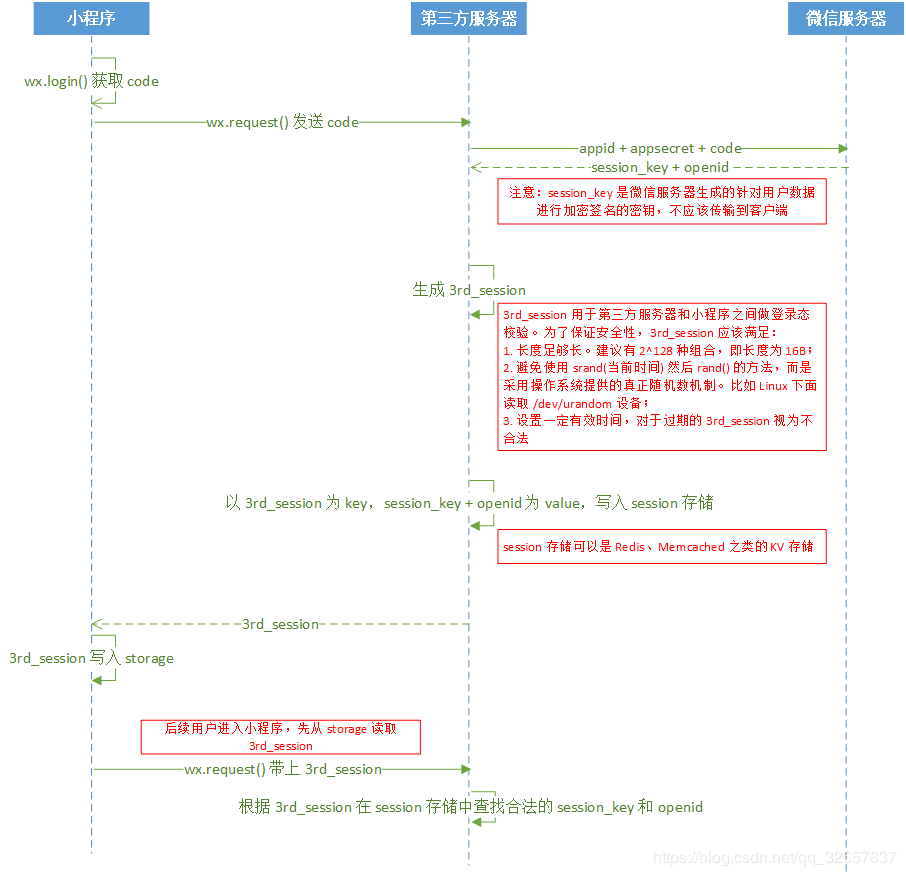
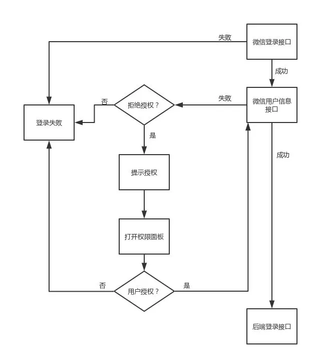
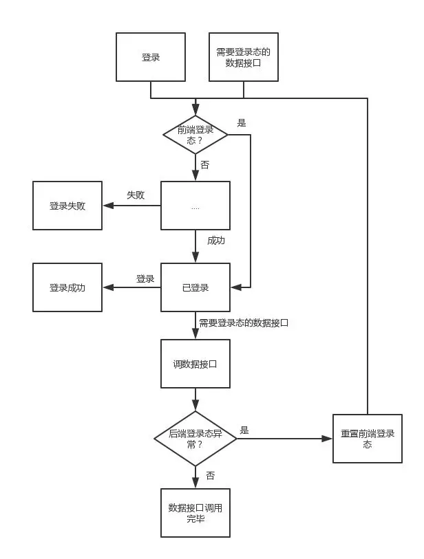
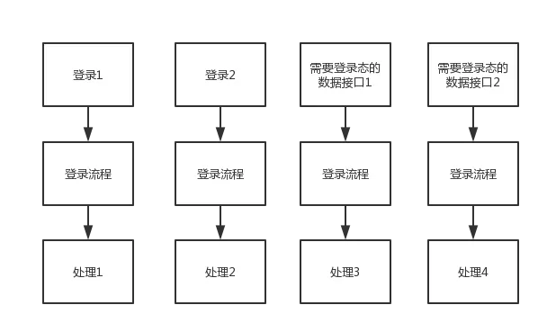
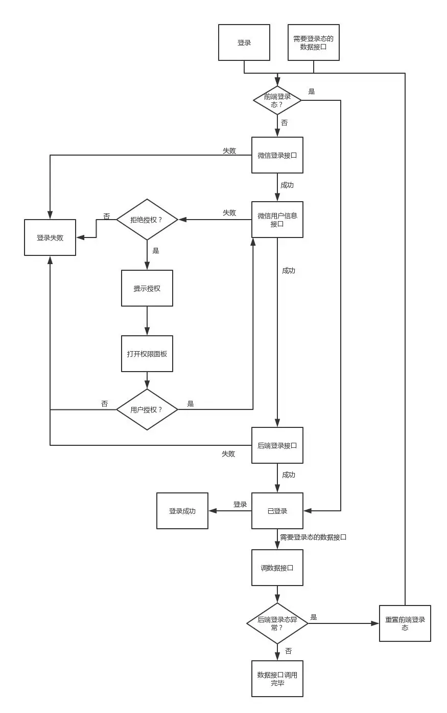
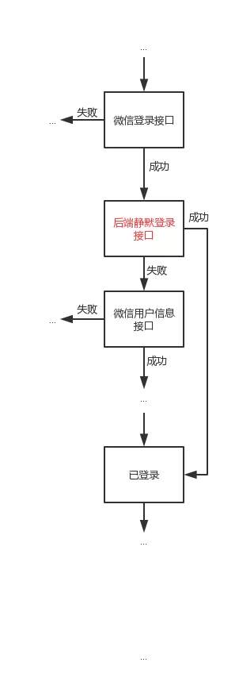
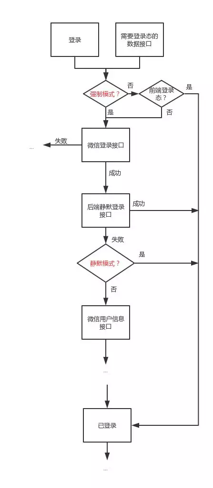
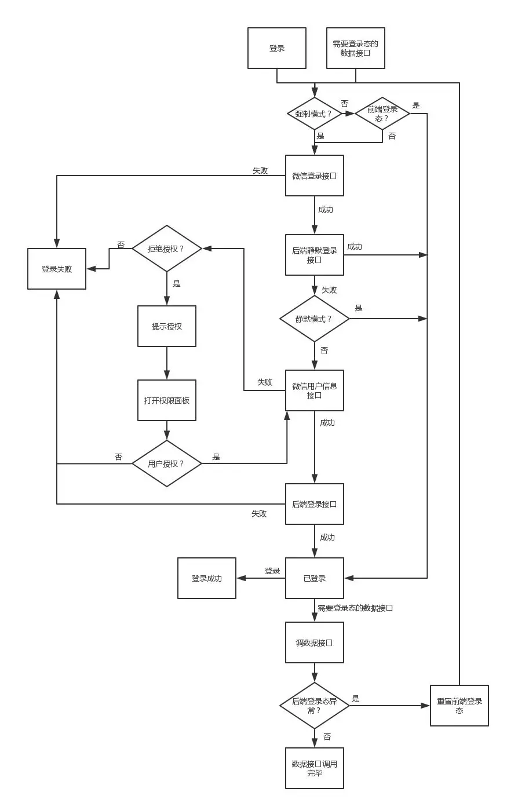

- 打卡类小程序
- 博客类小程序
- 电商类小程序
- 点餐类小程序
【 todo 】
小程序登录注册 openid
哪些页面需要用户登录
用户拒绝授权
用户每次登录小程序(包括第一次使用)及点击小程序的每个页面的时候,我们如何判断他当前的登录状态是否过期?如果过期,如何重新获取用户信息并发送至开发者服务器更新用户信息,以及设置新的用户登录状态？
登录成功之后可以把用户一些不敏感信息比如userid存在本地wx.setStorage,然后其他页面判断有没有这个本地数据就好了
wx.checkSession是判断wx.login方法登录态有没有失效的
session_key和微信派发的code是一一对应的,同一code只能换取一次session_key。每次调用wx.login()都会下发一个新的code和对应的session_key,为了保证用户体验和登录态的有效性,开发者需要清楚用户需要重新登录时才去调用wx.login()
const { OPENID, APPID } = cloud.getWXContext()
const { OPENID: openId, APPID: appId } = cloud.getWXContext()
let {
env = null,
secretId = null,
secretKey = null,
collection = 'access_token',
gapTime = 300000 // 5 分钟
} = options;
data: {
...event.user,
phoneNumber: data.phoneNumber,
expireTime: Date.now() + duration,
...data
}
回调
const http = (url, callBack, method = 'GET', data = '') => {
wx.request({
url: url,
data: data,
method: method,
header: {
"content-Type": method == "GET" ? "application/json" : "application/x-www-form-urlencoded"
},
success: function (res) {
return typeof callBack == "function" && callBack(res.data);
},
fail: error => console.error(error)
})
}
wechat api promise
function promiseHandle(func, options) {
options = options || {};
return new Promise((resolve, reject) => {
if (typeof func !== 'function') reject();
options.success = resolve;
options.fail = reject;
func(options);
});
}
wxPromise.js
/**
* 小程序API的Promise封装,用法与wx一致,只是返回结果为Promise形式
* 示例： 打印图片信息,调用wx.getImageInfo,并在success回调中resolve
const wxPromise = requier('./wxPromise.js')
async func(){
let imgInfo = await wxPromise.getImageInfo({src: 'https://xxx'});
console.log(imgInfo.width);
}
*/
export const wxPromise = promisify(wx, {dealFail: false});
/**
*同wxPromise,差别在于wxPromise在成功时resolve失败时reject,而wxResolve不管成功失败都会resolve,便于手动处理异常情形
* 示例：
async func(){
let copyRes = await wxResolve.setClipboardData({ data: 'hello'}); //复制到剪贴板
this.$toast({ //成功失败均予以提示
title: copyRes.succeeded ? '复制成功' : '复制失败',
type: copyRes.succeeded ? 'success' : 'fail',
});
}
*/
export const wxResolve = promisify(wx, {dealFail: true});
/**
* 自定义Promise化方式
* @param {Object} overrides 自定义覆盖wx的部分接口
* @param {boolean} dealFail true - 失败时也resolve,并标记res.succeeded=false;false - 失败时直接reject
* @return {Object} Promise化的wx
*/
export function customWxPromisify({overrides={}, dealFail=false} = {}) {
return promisify(Object.assign({}, wx, overrides), {dealFail});
}
function promisify(callbackSdk, {dealFail=false}) {
let promiseSdk = {};
for (let key in callbackSdk) {
if (typeof callbackSdk[key] !== "function" || /[^a]sync$/i.test(key)) {
promiseSdk[key] = callbackSdk[key];
continue;
}
promiseSdk[key] = function (options={}) {
return new Promise((resolve, reject) => {
return callbackSdk[key](Object.assign({}, options, {
success(res){
Object.assign(res, {succeeded: true});
options.success && options.success(res);
resolve(res);
},
fail(res){
Object.assign(res, {succeeded: false});
options.fail && options.fail(res);
dealFail ? resolve(res) : reject(res);
},
}));
});
}
}
return promiseSdk;
}
【 使用页面栈改变上一页面的数据,实现数据传递给上一个页面 】
微信小程序中如果从一个页面中进入下一个页面,如果下个页面的数据有删除或者增加再返回上一个页面的时候,就会导致页面不刷新(数据加载函数在onload中),从而造成数据不一致的情况。其实在微信小程序中是可以实现改变上一个页面中的数据似的前后两个页面数据一致的。
一般的方法可以使用本地缓存将当前页面的数据放入,回到上级页面的时候再从缓存中读取出来,还有就是使用页面栈的。
获取当前页面栈的实例可通过getCurrentPages()函数,以数组形式按栈的顺序给出,第一个元素为首页,最后一个元素及时当前页面
页面上一页面必须使用wx.navigateTo()跳转到下一页面,不能使用wx.redirectTo,这样会关闭上一个页面,导致页面B无法获取上一页Page实例
// 前一页面
Page({
data: {
name: ''
},
//更新name
changeData: function(name){
this.setData({ name })
}
})
// 当前页面
Page({
inputTyping: function (e) { //文本框输入回调
var pages = getCurrentPages(); //获取页面栈
var Page = pages[pages.length - 1]; //当前页
var info = prevPage.data //取上页data里的数据也可以修改
if(pages.length > 1){ //说明有上一页存在
var prePage = pages[pages.length - 2]; //上一个页面实例对象
prePage.changeData(e.detail.value) //关键在这里,调用上一页的函数
}
}
})
【 wx:if vs hidden 】
wx:if在隐藏的时候不渲染,而hidden在隐藏时仍然渲染,只是不呈现。
所以如果频繁切换的话,用wx:if将会消耗更多资源,因为每次呈现时都会渲染,每次隐藏时都会销毁。
如果切换并不频繁的话,用wx:if相对来说较好些,因为它会避免初始就一下渲染那么多。
【 onShareAppMessage 】
onShareAppMessage() {
if (!isUpdate) {
return {
title: '我发现一个好玩的天气小程序,分享给你看看！',
path: '/pages/weather/index'
}
} else {
const {lat, lon, address, province, city, county} = this.data
let url = `/pages/weather/index?lat=${lat}&lon=${lon}&address=${address}&province=${province}&city=${city}&county=${county}`
return {
title: `「${address}」现在天气情况,快打开看看吧！`,
path: url
}
}
},
wx.request({
url: requesturl,
header:{'content-type': 'application/x-www-form-urlencoded'},
data: {test: 'test', test2: 'test2'},
sucess: res => {
if(res.statusCode == 200){ // 判断是否返回200
if(res.data && res.data.constructor == Object){ // 判断数据结构是否完整
resolve(res.data);
}else{
console.log('网络异常,请稍后再试! gde0')
reject()
}
}else{
console.log('网络异常,请稍后再试! gde1')
reject()
}
},
fail: () => {
console.log('网络异常,请稍后再试! gde2')
reject()
}
})
project.config.json
{
//描述
"description": "项目配置文件",
// 配置项目在打包过程中的选项。打包是预览、上传时对项目进行的必须步骤
"packOptions": {
//用以配置打包时对符合指定规则的文件或文件夹进行忽略,以跳过打包的过程,这些文件或文件夹将不会出现在预览或上传的结果内
// packOptions.ignore 为一对象数组,对象元素类型如下:
// value:string类型表示路径1或取值,value字段的值若表示文件或文件夹路径,以小程序目录(miniprogramRoot)为根目录
// type:string类型表示类型,可以取的值为folder、file、suffix、prefix、regexp2、glob2分别对应文件夹、文件、后缀、前缀、正则表达式、Glob 规则,所有规则值都会自动忽略大小写。
"ignore": [
{"type": "file", "value": "test/test.js"},
{"type": "folder", "value": "test"},
{"type": "suffix", "value": ".webp"},
{"type": "prefix", "value": "test-"},
{"type": "glob", "value": "test/**/*.js"},
{"type": "regexp", "value": "\\.jsx$"}
]
},
"setting": { //项目设置
"urlCheck": false, //不检查安全域名和TLS版本
"es6": true, //启用es6转es5
"postcss": true, //上传代码时样式自动补全
"minified": true, //上传代码时自动压缩
"newFeature": true //新特征,文档中未描述
},
"compileType": "miniprogram", //编译类型,miniprogram为普通小程序项目
"libVersion": "2.3.0", //基础库版本
"appid": "touristappid", //AppID
"projectname": "%E6%B5%85%", //项目名,只在新建项目时读取,urlDecode解码(路径解码)
// 配置在对项目代码进行调试时的选项
"debugOptions": {
//配置调试时于调试器Sources面板隐藏源代码的hidedInDevtools的配置规则和packOptions.ignore一致
//当某个js文件符合此规则时,调试器Sources面板中此文件源代码正文内容将被隐藏,显示为:
//xxx.js has been hided by project.config.json
"hidedInDevtools": []
},
//自定义预处理的命令 beforeCompile编译前预处理命令、beforePreview预览前预处理命令、beforeUpload上传前预处理命令
"scripts": {},
"condition": { //编译模式,增加编译模式时,会添加到下面的对应数组
"search": {
"current": -1,
"list": []
},
"conversation": {
"current": -1,
"list": []
},
"plugin": { //插件
"current": -1,
"list": []
},
"game": { //小游戏
"list": []
},
"miniprogram": { //小程序
"current": -1,
"list": []
}
}
}
性能优化
控制包的大小的措施
开启开发者工具中的"上传代码时候自动压缩"
压缩代码,清理无用的代码和资源文件,在整个流程中时间开销大体上与节点树中节点的总量成正比例关系,因而减少WXML中节点的数量可以有效降低初始渲染和重渲染的时间开销,提升渲染性能
减少代码包中的图片等资源文件的大小和数量,图片放在cdn
采用分包策略、分包预加载、独立分包
首屏加载的体验优化建议
对低于1MB的代码包下载时间可以控制在929ms(iOS)、1500ms(Android)内
1、提前请求:异步请求数据不需要等待页面的渲染完成。
2、利用缓存:利用storage API对异步请求数据进行缓存,二次启动时先利用缓存数据渲染页面再进行后台更新,无网环境下,用户也能很顺畅的使用到关键服务
3、避免白屏:先展示页面骨架和基础内容
4、及时反馈:及时的对需要用户等待的交互操作进行反馈,避免用户以为小程序卡了,无响应
异步请求的优化
onLoad阶段就可以发起请求,不用等ready
请求结果放在缓存中,下次接着用
请求中可以先展示骨架图
先反馈再请求。比如点赞的按钮可以先改变按钮的样式,再发起异步请求
提升渲染性能
每次setData的调用都是一次进程间的通信过程,通信开销与setData的数据量正相关的
setData会引发视图层页面内容的更新,这一耗时操作一定时间内会阻塞用户交互
减少setData的数据量,仅仅传输变化的数据,如果一个数据不能会影响渲染层则不用放在setData里面
合并setData的请求,减少通讯的次数,避免短时间被频繁调用setData
列表的局部更新,如果采用setData全局刷新,用户完成之后重新获取数据,再次进行全局重新渲染
在一些页面会进行一些操作,而到页面跳转后,代码逻辑还在执行,此时多个webview是共享一个js进程;后台的setData操作会抢占前台页面的渲染资源,页面在切入后台后的setData调用延迟到页面重新展示的时候执行
使用自定义组件
自定义组件的更新只在组件内部进行,不受页面其他不能分内容的影响;比如一些运营活动的定时模块可以单独抽出来,做成一个定时组件,定时组件的更新并不会影响页面上其他元素的更新;各个组件也将具有各自独立的逻辑空间,每个组件都分别拥有自己的独立的数据、setData调用。
用户事件使用不当
视图层将事件反馈给逻辑层时,同样需要一个通信过程,通信的方向是从视图层到逻辑层。因为这个通信过程是异步的,会产生一定的延迟,延迟时间同样与传输的数据量正相关,数据量小于64KB时在30ms内。降低延迟时间的方法主要有两个。
1.去掉不必要的事件绑定(WXML中的bind和catch),从而减少通信的数据量和次数;
2.事件绑定时需要传输target和currentTarget的dataset,因而不要在节点的data前缀属性中放置过大的数据
上拉加载更多特别卡,通过列表局部更新的技巧性能改善不大,是因为首页需要监听scroll事件,导致scroll事件被频繁的触发,回调函数中有耗时操作,导致onreachBottom事件被阻塞了,也就是说要等大概1~2秒才会去发起下一页的请求。 取消掉scroll事件的监听,原本>4s的加载时间控制在1s之内。
小心后台页面的js
小程序中可能有n个页面,所有的这些页面都拥有自己的webview(渲染层),但是却共享同一个js运行环境,跳到了另外一个页面B,本页面A页面的定时器等js操作仍在进行并不会被销毁,并且会抢占B页面的资源,所以必须手动的"清理"掉这样的代码
清除页面上多个定时器
onload(){
this. tickers = []
// 然后每创建一个timer就push进去一个
this.tickers.push(setInterval(func, 1000)
}
onUnload(){
this.tickers.forearch(t => {
if(t) clearInterval(t)
})
}
小心onPageScroll
pageScroll事件也是一次webview层向js逻辑层的通讯,开销较大,如果考虑到这个事件被频繁的调用,回调函数如果有复杂的setData的话性能就会很差
只在有必要的时候监听pageScroll事件
避免在onPageScroll中执行复杂逻辑
避免在onPageScroll中频繁调用setData
避免频繁查询节点信息(SelectQuery),部分场景建议使用节点布局相交状态监听(IntersectionObserver)替代
生命周期函数
wx.reLaunch是可以跳转到tabBar页面的。它和wx.switchTab的区别就是:前者可以触发onLoad事件,而后者则不能触发。所以通过wx.reLaunch跳转到tabBar的方式完美解决了返回tabbar页面时不能刷新的问题
方法二:onShow方法在页面进行显示的时候就会重新执行一次
onShow: function () {
this.getreloadLog();
},
getreloadLog:function(){
wx.showLoading({ title: '加载中' })
var that = this;
var query = db.collection('log').orderBy('Time', 'DESC').limit(10);
if(this.data.isWhere){
query = query.where({ Date: that.data.date })
}
query.get().then(res => {
that.setData({
log: res.data,
page: that.data.page + 1,
isAll:false
});
wx.hideLoading();
});
},
app.js一般里面都写的wx.login函数。页面里的onload,onshow都写的接口等数据。
app.js不先执行,onload里面的数据就会因为没有获取到app.js里的东西而报错。
解决方案:写一个回调函数,onload里获取不到东西就一直获取,不执行下一步操作。直到获取到app.js的数据才继续执行。
回调
// app.js
that.globalData.session = res.data.data.session
this.callback && typeof this.callback == "function" && this.callback(res.data)
// page.js
onLoad: function (options) {
var that = this;
if (app.globalData.session) {//判断有没有你要的 没有说明还没返回或者是失败了
console.log('第一次回调', app.globalData.session);
that.setData({ session: app.globalData.session })
} else { //这个是时候我们在app的config里定义一个函数 给请求成功后调用
app.callback = () => {
console.log('再次回调', app.globalData.session);
that.setData({ session: app.globalData.session })
};
}
if(that.data.session !=''){
wx.request()//执行接口
}
},
promise - index.js获取app.js异步请求的动态数据
// app.js
globalData: {
test: 1
},
wxLogin() {
let that = this;
return new Promise((resolve, reject) => {
wx.request({
url: 'https://www.xxx.com/api/xxx/xxx',
method: 'POST',
data: { test: 1 },
header: { 'content-type': 'application/x-www-form-urlencoded' },
success: () => {
that.globalData.test = 2;
}
})
})
},
// index.js:
const app = getApp();
onReady() {
app.wxLogin().then(res => {
console.log(app.globalData.test); // 2
});
},
app.js页面onShow如何获取onLaunch里request异步得到的数据
onLaunch: function () {
wx.login({
success: res => {
wx.request({
....省略
success: res =>{
if (res.statusCode == 200){
this.globalData.openid = res.data.openid; //我在这里赋值
}
}
})
}
})
},
onShow:function(){
console.log('onshow---',this.globalData.openid); //但这里打印值是空的
},
globalData: {
userInfo: null,
openid:''
},
// 解决
onLaunch: function () {
wx.login({
success: res => {
wx.request({
....省略
success: res =>{
if (res.statusCode == 200){
this.globalData.openid = res.data.openid; //我在这里赋值
this.asd && this.asd();
}
}
})
}
})
},
onShow:function(){
if(this.globalData.openid){
console.log(this.globalData.openid)
}else{
this.asd = res => console.log(this.globalData.openid)
}
},
globalData: {
userInfo: null,
openid:''
},
rpx
rpx: responsive pixel,可根据屏幕宽度自适应,规定屏幕宽为750rpx。iPhone6屏幕宽度为375px,共750个物理像素,则750rpx = 375px = 750物理像素,1rpx = 0.5px = 1物理像素
开发微信小程序时设计师可用iPhone6作为视觉稿的标准
iPhone6屏幕4.7英寸,机身厚6.9毫米,长宽厚138.1 mm*67.0 mm*6.9 mm,重129g,分辨率为1334*750
iphone6 375*667 Dpr:2
wx.getSystemInfoSync()
SDKVersion:"2.4.2"
batteryLevel:100
brand:"devtools"
fontSizeSetting:16
language:"zh"
model:"iPhone 6"
pixelRatio:2
platform:"devtools"
screenHeight:667
screenWidth:375
statusBarHeight:20
system:"iOS 10.0.1"
version:"6.6.3"
windowHeight:555
windowWidth:375
brand string 设备品牌
model string 设备型号
pixelRatio number 设备像素比,pixelRadio是rpx/px的值(i6为750/375=2)
screenWidth number 屏幕宽度,单位px
screenHeight number 屏幕高度,单位px
windowWidth number 可使用窗口宽度,单位px
windowHeight number 可使用窗口高度,单位px
statusBarHeight number 状态栏的高度,单位px
language string 微信设置的语言
version string 微信版本号
system string 操作系统及版本
platform string 客户端平台
fontSizeSetting number 用户字体大小(单位px)。以微信客户端「我-设置-通用-字体大小」中的设置为准
SDKVersion string 客户端基础库版本
benchmarkLevel number 设备性能等级(仅Android小游戏)。取值-2或0则该设备无法运行小游戏),-1(性能未知),>=1(设备性能值,该值越高,设备性能越好,目前最高不到50)
albumAuthorized boolean 允许微信使用相册的开关(仅 iOS 有效)
cameraAuthorized boolean 允许微信使用摄像头的开关
locationAuthorized boolean 允许微信使用定位的开关
microphoneAuthorized boolean 允许微信使用麦克风的开关
notificationAuthorized boolean 允许微信通知的开关
notificationAlertAuthorized boolean 允许微信通知带有提醒的开关(仅 iOS 有效)
notificationBadgeAuthorized boolean 允许微信通知带有标记的开关(仅 iOS 有效)
notificationSoundAuthorized boolean 允许微信通知带有声音的开关(仅 iOS 有效)
bluetoothEnabled boolean 蓝牙的系统开关
locationEnabled boolean 地理位置的系统开关
wifiEnabled boolean Wi-Fi的系统开关
page {
height:100vh;
background:rgb(255,208,0);
overflow:hidden;
}
wxml plane
375*555
换算不能使用pixelRatio
wx.getSystemInfo({
success:function (res) {
console.log(res.windowHeight) // 获取可使用窗口高度
let windowHeight = (res.windowHeight * (750 / res.windowWidth)); //将高度乘以换算后的该设备的rpx与px的比例
console.log(windowHeight) //最后获得转化后得rpx单位的窗口高度
}
})
引入外部字体
小程序的wxss文件font-face的url不接受http地址作为参数,可以接受base64,因此可以先将字体文件下载后,转换为base64,然后引用
一.阿里巴巴矢量图标库
1.进入网站 登录,注册。
2.图标管理---->我的项目------>新建项目
3.在首页选择需要的字体图标添加到购物车
4.在右上角购物车内,将所选图标添加到项目中
5.接下来是关于小程序的了,先在小程序中建一个公共的.wxss文件,
a. 选择在线代码则.wxss文件代码为:
@font-face {
font-family: 'iconfont'; /* project id 706844 */
src: url('//at.alicdn.com/t/font_706844_l7ysdcmfr3e.eot');
src: url('//at.alicdn.com/t/font_706844_l7ysdcmfr3e.eot?#iefix') format('embedded-opentype'),
url('//at.alicdn.com/t/font_706844_l7ysdcmfr3e.woff') format('woff'),
url('//at.alicdn.com/t/font_706844_l7ysdcmfr3e.ttf') format('truetype'),
url('//at.alicdn.com/t/font_706844_l7ysdcmfr3e.svg#iconfont') format('svg');
}
.iconfont {
font-family:"iconfont" !important;
font-size:16px;
font-style:normal;
-webkit-font-smoothing: antialiased;
-moz-osx-font-smoothing: grayscale;
}
b. 下载至本地,打开下载后的文件,引用其中的iconfont.css
.wxss文件的代码
@font-face {font-family: "iconfont";
src: url('iconfont.eot?t=1528889671378'); /* IE9*/
src: url('iconfont.eot?t=1528889671378#iefix') format('embedded-opentype'), /* IE6-IE8 */
url('data:application/x-font-woff;charset=utf-8;base64,d09GRgABAAAAAAZ...JqQAAAA==') format('woff'),
url('iconfont.ttf?t=1528889671378') format('truetype'), /* chrome, firefox, opera, Safari, Android, iOS 4.2+*/
url('iconfont.svg?t=1528889671378#iconfont') format('svg'); /* iOS 4.1- */
}
.iconfont {
font-family:"iconfont" !important;
font-size:16px;
font-style:normal;
-webkit-font-smoothing: antialiased;
-moz-osx-font-smoothing: grayscale;
}
//这三个代表图标
.icon-Facetime:before { content: "\e659"; }
.icon-duanxin:before { content: "\e65c"; }
.icon-dianhua:before { content: "\e65d"; }
接下来就是引用公共类.wxss
@import "../../utils/font.wxss";
＜text class='iconfont icon-Facetime'>地址＜/text>
二.http://transfonter.org/
http://transfonter.org/网站里上传字体文件,选择base64编吗,fotmat后下载,下载包里style文件打开后代码添加到WXSS
＜text style="font-family: 'FZMeiHei-M07T'">{{text}}＜/text>
方法三,微信提供了wx.loadFontFace(OBJECT)动态加载字
// wxss
.page-body-info {align-items: center;padding: 200rpx 0;}
.font-loaded {font-family: "Bitstream Vera Serif Bold";}
.display-area {font-size: 40rpx;display: flex;justify-content: center;}
// wxml
Load {{ fontFamily }}
{{ fontFamily }} is loaded
// js
Page({
data: {
fontFamily: 'Bitstream Vera Serif Bold',
loaded: false,
},
onLoad() {
this.setData({ loaded: false })
},
loadFontFace() {
const self = this
wx.loadFontFace({
family: this.data.fontFamily,
source: 'url("https://sungd.github.io/Pacifico.ttf")',
success(res) {
console.log(res.status)
self.setData({ loaded: true })
},
fail: res => console.log(res.status),
complete: res => console.log(res.status)
});
}
})
wx.setStorageSync、app.globalData、this.data、this.setData({})、this._data
app.globalData是全局变量,下次进入时就要重新获取,所以可以在小程序整个生命周期中调用
storage是本地的数据库,可以保存更久,所以可以在小程序下次进入时赋值给app.globalData
wx.setStorage(Object object)
将数据存储在本地缓存中指定的key中,会覆盖掉原来该key对应的内容。
数据存储生命周期跟小程序本身一致,即除用户主动删除或超过一定时间被自动清理,否则数据都一直可用。
微信发现栏长按小程序可以从小程序列表中把小程序删除,本地缓存就没有了
如果空间不足会进行LRU,也就是不经常使用的小程序的数据缓存区域会被全部清空
同一个小程序的开发版、体验版、线上版的缓存是共用的,需要同时删除这三个版本的小程序,缓存才会被删除。
单个key允许存储的最大数据长度为1MB,所有数据存储上限为10MB。
console.log(wx.getStorageSync('noExists') === "") // true
var res = wx.removeStorageSync('noExists');
console.log(res) // undefined
console.log(wx.getStorageSync('noExists') === "") // true
要在Storage中隔离一个Cookie,用来模拟浏览器中的Cookie,解析接口返回的Header,设置Cookie,在发送接口请求前自动带上Cookie
let cookie = (function(){
return wx.getStorageSync('cookies');
}())
const Cooke = {
getCookie(){}, //从内存中获取cookie
setCookie(){}, // 设置cookie
setCookieInHeader(){}, //根据response的Header设置cookie
removeCookie() {}, //删除cookie
isExpired() {} //判断是否过期
}
在设置storage的时候,增加一个字段expire用来表示过期时间,小于等于现在时间为过期
function isExpired (expires) {
if (new Date(expires) <= new Date()) return true;
}
Page.prototype.setData(Object data, Function callback)
将数据从逻辑层发送到视图层(异步),同时改变对应的this.data的值(同步)
callback可选,表示setData引起界面更新渲染完毕后的回调函数
与界面渲染无关的数据最好不要设置在data中,可以考虑设置在page对象的其他字段下如this._data
Object以key: value的形式表示,将this.data中的key对应的值改变成value
其中key可以以数据路径的形式给出,支持改变数组中的某一项或对象的某个属性,如array[2].message、a.b.c.d,并且不需要在this.data中预先定义
直接修改this.data,而不调用this.setData(),是无法改变当前页面的状态的,会导致数据不一致
仅支持可以JSON化的数据
单次设置的数据不能超过1024KB,尽量避免一次设置过多的数据
不要把data中的任何一项的value设为undefined,否则这一项将不能被设置,可能会有潜在的问题
如果在onReady()函数中调用setData()方法,那么通过这个方法设置的值只能刷新一次,若要再次刷新需要清除缓存
this.setData({
info: { nickName: "xxx", gender: 1 },
isChecked: [true, true, true, true, true],
notChecked: [{key: true},{key: true},{key: true}]
})
this.setData({ info: { isLoaded: true } })
console.log(this.data.info) // {isLoaded: true}
var index = 3
var str = "isChecked["+ index +"]" // 组合出一个字符串
this.setData({ [str]: false }) //用中括号把str括起来即可
console.log(this.data.isChecked) // [true, true, true, false, true]
var str = "notChecked[2].key"
this.setData({ [str]: false })
console.log(this.data.notChecked) // [{key: true},{key: true},{key: false}]
this.setData({ ["info.isAuthorized"]: true })
console.log(this.data.info) // {isLoaded: true, isAuthorized: true}
this.setData({ "info.isAuthorized": false })
console.log(this.data.info) // {isLoaded: true, isAuthorized: false}
实现网络图片本地缓存
// 第一步: 要缓存图片那么要先将图片下载下来,wx.downloadFile,当图片下载成功以后会返回一个tempFilePath临时的文件路径,本地临时文件只能通过调用特定接口产生,不能直接写入内容。本地临时文件产生后,仅在当前生命周期内有效,重启之后即不可用。因此不可把本地临时文件路径存储起来下次使用,这个临时的文件路径不满足需求。那么接下来怎么利用这个临时文件路径实现本地缓存呢？
wx.downloadFile({
url: 'xxxxxxx',
success: function(res) {
if (res.statusCode === 200) {
console.log('图片下载成功' + res.tempFilePath)
// 第二步: 使用小程序的文件系统,通过小程序的api获取到全局唯一的文件管理器,其作用之一就是可以根据临时文件路径通过saveFile把文件保存到本地缓存
const fs = wx.getFileSystemManager()
fs.saveFile({
tempFilePath: res.tempFilePath, // 传入一个临时文件路径
success(res) {
console.log('图片缓存成功', res.savedFilePath)
// 此时图片本地缓存已经完成,res.savedFilePath为本地存储的路径,一个本地缓存文件路径
//小程序的本地文件路径标准: {{协议名}}://文件路径,协议名在iOS/Android客户端为"wxfile",在开发者工具上为"http",开发者无需关注这个差异,也不应在代码中去硬编码完整文件路径。
// 到此为止已经把图片缓存到本地了,而且也得到了本地缓存的路径。那么把本地缓存的路径通过小程序的数据缓存服务保存下来,下次打开小程序首先去缓存中检查是否存在本地文件的缓存路径
// 如果有则直接image src赋值本地缓存路径,如果没有则是第一次下载图片或用户手动清理缓存造成的。
wx.setStorageSync('image_cache', res.savedFilePath)
}
})
}else {
console.log('响应失败', res.statusCode)
}
}
/// 重新启动小程序,去缓存中获取图片的缓存地址。 然后给Imagesrc赋值
const path = wx.getStorageSync('image_cache')
if (path != null) {
console.log('path====', path)
this.setData({
image_filepath: path
})
}else {
console.log('去缓存图片')
}
＜image src="{{image_filepath}}">＜/image>
云函数
云函数event.userInfo.openId、event.userInfo.appId,当小程序端调用云函数时云函数的传入参数中会被注入小程序端用户的openid
调用云函数的返回值
{
errMsg: "cloud.callFunction:ok",
result: {message: "login success", code: 0},
requestID: "28601a30-58db-11e9-984c-525400681fe1"
}
建议云函数的返回值
return {
code: 0,
message: 'success',
data: {
...event.user,
...data
},
}
callback
exports.main = async (event, context, callback) => {
const {code,formId,data,page,prepayId,appId,openId} = event
return sendMessage({
appId,
secret: SECRET,
templateId: event.templateId || TEMPLATE_ID,
code,
formId: formId || prepayId,
data,
page,
openId,
}).then(msg => renderReturn(callback, 0, msg))
.catch(err => renderReturn(callback, 1, err))
}
将所有云函数写在同一个云函数内,如果需要切换环境,只需要修改一个文件,部署一个云函数即可
// 云函数入口文件
const cloud = require('wx-server-sdk');
cloud.init();
// 云函数入口函数
exports.main = async (event, context) => {
log(event , "收到云函数调用");
const funcMain = require("./functions/" + event.funcName + ".js"); // 根据funcName寻址云函数
return await funcMain(event, context, cloud); // 将任务分发下发,此处要将cloud传下去
};
// 云函数入口文件
var cloud;
var db;
var _;
// 云函数入口函数
const main = async(event, context, cloud) => {
db = cloud.database();
_ = db.command;
};
module.exports = main;
云函数本地调试,执行npm install,然后node test
// 如果云函数使用的云数据或云存储的话在index.js
// const cloud = require('wx-server-sdk')
// cloud.init({ secretId: 'XXXXXXXX', secretKey: 'XXXXXXX', env: 'pro-XXXXX'})
var exports_mode = require('./index')
var event = {
"a": 1,
"b": 2,
"userInfo": {
"appId": "wxXXXXXX",
"openId": "XXXXXXXX"
}
}
exports_mode.main(event, null)
云开发数据库 json数据库
每条记录都有一个_id字段用以唯一标志一条记录、一个_openid字段用以标志记录的创建者,即小程序的用户。
需要特别注意的是,在管理端(控制台和云函数)中创建的不会有_openid字段,因为这是属于管理员创建的记录。开发者可以自定义_id,但不可自定义和修改_openid。_openid是在文档创建时由系统根据小程序用户默认创建的,开发者可使用其来标识和定位文档。
数据库API分为小程序端和服务端两部分,小程序端API拥有严格的调用权限控制,开发者可在小程序内直接调用API进行非敏感数据的操作。对于有更高安全要求的数据,可在云函数内通过服务端API进行操作。云函数的环境是与客户端完全隔离的,在云函数上可以私密且安全的操作数据库。
调用云开发数据库的返回值
{
data: [{_id: "XKi90N7E7L4wI3j5", _openid: "om3bq4gh_9X-Sedn2uZgR-LqdN6E", session_key: "NPGbzxATn67dVp7xXnY8Lg=="}],
errMsg: "collection.get:ok"
}
{
stats: {updated: 1},
errMsg: "document.update:ok"
}
【 Server端的API与小程序端基本保持一致,有如下不同 】
1、Server端API不再接受回调(success, fail, complete),统一返回Promise
2、Server端有批量写和批量删除的权限,即可在集合或查询语句上调用update或remove,小程序端只能更新删除单条数据
export.main = async (event, context) => {
cloud.database().collection('todos').where({done: true}).remove()
}
3、Server端独有API如创建集合(db.createCollection),如果集合已经存在会创建失败,Promise resolve的结果Result是一个仅含errMsg的对象
await db.createCollection('todos')
4、小程序文档上云端插入和更新数据时data字段是必填,update(data: { timeout, session, openid })
但是实际执行时update({ timeout, session, openid })是执行成功
而小程序端会报错parameter.data should be object instead of undefined)
let timeout = Date.now() + time
if (status.data.length) {
await statusCollection.doc(status.data[0]._id).update({ timeout, session, openid })
} else {
await statusCollection.add({ timeout, session, openid })
}
【 Collection.doc 】
获取记录的引用
function doc(id: string | number): Document
方法接受一个 id 参数,指定需引用的记录 ID
const myTodo = db.collection('todos').doc('my-todo-id')
【 Collection.get / Query.get 】
获取集合数据,或获取根据查询条件筛选后的集合数据。
如果没有指定 limit,则默认最多取20条记录。
如果没有指定 skip,则默认从第0条记录开始取,skip常用于分页
默认limit 100条的限制,因此很可能一个请求无法取出所有数据,需要分批次取
const cloud = require('wx-server-sdk')
cloud.init()
const db = cloud.database()
const MAX_LIMIT = 100
exports.main = async (event, context) => {
// 先取出集合记录总数
const countResult = await db.collection('todos').count()
const total = countResult.total
// 计算需分几次取
const batchTimes = Math.ceil(total / 100)
// 承载所有读操作的promise的数组
const tasks = []
for (let i = 0; i < batchTimes; i++) {
const promise = db.collection('todos').skip(i * MAX_LIMIT).limit(MAX_LIMIT).get()
tasks.push(promise)
}
// 等待所有
return (await Promise.all(tasks)).reduce((acc, cur) => {
return {
data: acc.data.concat(cur.data),
errMsg: acc.errMsg,
}
})
}
【 db.serverDate() 】
构造一个服务端时间的引用。可用于查询条件、更新字段值或新增记录时的字段值。
function serverDate(options?: object): ServerDate
方法接受一个可选对象参数options,字段名offset,类型number,非必填,引用的服务端时间偏移量,毫秒为单位,可以是正数或负数
新增记录时设置字段为服务端时间
const cloud = require('wx-server-sdk')
cloud.init()
const db = cloud.database()
exports.main = async (event, context) => {
try {
return await db.collection('todos').add({
description: 'eat an apple',
createTime: db.serverDate()
})
} catch(e) {
console.error(e)
}
}
更新字段为服务端时间往后一小时
const cloud = require('wx-server-sdk')
cloud.init()
const db = cloud.database()
exports.main = async (event, context) => {
try {
return await db.collection('todos').doc('my-todo-id').update({
due: db.serverDate({ offset: 60 * 60 * 1000 })
})
} catch(e) {
console.error(e)
}
}
【 db.Geo.Point() 】
构建一个机遇地理位置的引用
db.collection('todos').add({
description: 'eat an apple',
location: db.Geo.Point(23, 113)
})
【 权限控制 】
数据库的权限分为小程序端和管理端,管理端包括云函数端和控制台
小程序端运行在小程序中,读写数据库受权限控制限制,应有严格的安全规则限制
运行在云函数上的管理端和云控制台拥有所有读写数据库的权限
对操作数据库开放以下几种权限配置,每个集合可以拥有一种权限配置,权限配置的规则是作用在集合的每个记录上的
在小程序中创建的每个数据库记录都会带有该记录创建者即小程序用户的信息,以_openid字段保存用户的openid在每个相应用户创建的记录中。因此权限控制也相应围绕着一个用户是否应该拥有权限操作其他用户创建的数据展开。
管理端始终拥有读写所有数据的权限,小程序端始终不能写他人创建的数据,小程序端的记录的读写权限其实分为了 "所有人可读,只有创建者可写"、"仅创建者可读写"、"所有人可读,仅管理端可写"、"所有人不可读,仅管理端可读写"。
以下按照权限级别从宽到紧排列如下:
1、仅创建者可写,所有人可读 小程序端不能写他人创建的数据,比如文章。
2、仅创建者可读写 小程序端不能读写他人创建的数据,比如用私密相册。
3、仅管理端可写,所有人可读 小程序端不能写自己和他人创建的数据,如商品信息。
4、仅管理端可读写 小程序端不能读写自己和他人创建的数据,如后台用的不暴露的数据。
所有用户可读,仅创建者及管理员可写
适用场景:用户评论、用户公开信息等
仅创建者及管理员可读写
适用场景:用户个人设置、用户订单管理等
所有用户可读,仅管理员可写
适用场景:商品信息等
仅管理员可读写
适用场景:后台流水数据等
云存储存储桶权限:
所有用户可读,仅创建者及管理员可写
适用场景:用户头像、用户公开相册等
仅创建者及管理员可读写
适用场景:私密相册、网盘文件等
所有用户可读,仅管理员可写
适用场景:文章配图、商品图片等
仅管理员可读写
适用场景:业务日志等
云存储
【 wx.cloud.uploadFile() 】
将本地资源上传到云存储空间,如果上传至同一路径则是覆盖写
var uploadTask = wx.cloud.uploadFile({
cloudPath: '/example.png',
filePath: '小程序临时文件路径',
success: res => console.log(res.fileId),
fail: err => console.error(err)
})
uploadTask.abort()
uploadTask.onProgressUpdata(res => {
console.log(res.progress, res.totalBytesSent, res.totalBytesExpectedToSend)
})
// promise风格无法获取上传进度
wx.cloud.uploadFile({
cloudPath: '/example.png',
filePath: '小程序临时文件路径',
}).then(res => console.log(res.fileId))
.catch(err => console.error(err))
【 wx.cloud.downloadFile() 】
var downloadTask = wx.cloud.downloadFile({
fileId: 'a7xzcb',
success: res => console.log(res.tempFilePath),
fail: err => console.error(err)
})
downloadTask.abort()
downloadTask.onProgressUpdata(res => {
console.log(res.progress, res.totalBytesWritten, res.totalBytesExpectedToWrite)
})
【 wx.cloud.getTempFileURL 】
用云文件ID换取真实连接,可自定义有效期,默认一天且最大超过一天
wx.cloud.getTempFileURL({fileList: ['cloud://xxx', 'cloud://yyyy']})
.then(res => console.log(res.fileList))
.catch(err => console.error(err))
wx.cloud.getTempFileURL({fileList: [
fileID: 'a7xzcb',
maxAge: 60*60 // one hour
]})
.then(res => console.log(res.fileList))
.catch(err => console.error(err))
【 wx.cloud.deleteFile() 】
wx.cloud.deleteFile({fileList: ['a7xzcb']})
.then(res => console.log(res.fileList))
.catch(err => console.error(err))
【 小程序组件支持传入云文件ID 】
组件 属性
image src
video src、poster
cover-image src
接口 参数
getBackgroundAudioManager src
createInnerAudioContext src
previewImage urls、current
【 云开发服务端API和小程序端API异同 】
服务端API仅支持Promise风格
服务端API可以进行批量updata和delete
云函数 openid
wx.cloud.init({env: test-we23, traceUser: true})
云开发控制台中用户管理显示进入小程序的用户信息traceUser必须设为true
当小程序没有得到用户授权获取userInfo时用户管理中显示的都是未授权,得到授权才会显示具体的用户信息
----> 自动记录用户的openId和用户信息 ---->
用户端小程序 云开发平台
----> 请求时自动带入openId,无须再鉴权 ---->
小程序内提供了专门用于云函数调用的API。开发者可以在云函数内使用wx-server-sdk提供的getWXContext方法获取到每次调用的上下文(appid、openid等),无需维护复杂的鉴权机制,即可获取天然可信任的用户登录态(openid)
云开发的云函数的独特优势在于与微信登录鉴权的无缝整合。当小程序端调用云函数时,云函数的传入参数有两个,一个是event对象,一个是context对象。event指的是触发云函数的事件,当小程序端调用云函数时event就是小程序端调用云函数时传入的参数,外加后端自动注入的小程序用户的openid(event.userInfo.openId)和小程序的appid(event.userInfo.appId),开发者无需校验openid的正确性因为微信已经完成了这部分鉴权,开发者可以直接使用该openid。context对象包含了此处调用的调用信息和运行状态,可以用它来了解服务运行的情况
【 支持云调用的服务端接口 开发者工具 >= 1.02.1903251 】
云调用是云开发提供的基于云函数使用小程序开放接口的能力。云调用需要在云函数中通过wx-server-sdk使用。在云函数中使用云调用调用服务端接口无需换取access_token,只要是在从小程序端触发的云函数中发起的云调用都经过微信自动鉴权,可以在登记权限后直接调用如发送模板消息等开放接口
用户信息
auth.getPaidUnionId 云调用 用户支付完成后获取该用户的UnionId,无需用户授权
数据分析
访问留存
analysis.getDailyRetain 云调用 获取用户访问小程序日留存
analysis.getMonthlyRetain 云调用 获取用户访问小程序月留存
analysis.getWeeklyRetain 云调用 获取用户访问小程序周留存
访问趋势
analysis.getDailyVisitTrend 云调用 获取用户访问小程序数据日趋势
analysis.getMonthlyVisitTrend 云调用 获取用户访问小程序数据月趋势
analysis.getWeeklyVisitTrend 云调用 获取用户访问小程序数据周趋势
analysis.getUserPortrait 云调用 获取小程序新增或活跃用户的画像分布数据
analysis.getVisitDistribution 云调用 获取用户小程序访问分布数据
analysis.getVisitPage 云调用 访问页面
analysis.getDailySummary 云调用 获取用户访问小程序数据概况
客服消息
customerServiceMessage.getTempMedia 云调用 获取客服消息内的临时素材
customerServiceMessage.send 云调用 发送客服消息给用户
customerServiceMessage.setTyping 云调用 下发客服当前输入状态给用户
customerServiceMessage.uploadTempMedia 云调用 把媒体文件上传到微信服务器
模板消息
templateMessage.addTemplate 云调用 组合模板并添加至帐号下的个人模板库
templateMessage.deleteTemplate 云调用 删除帐号下的某个模板
templateMessage.getTemplateLibraryById 云调用 获取模板库某个模板标题下关键词库
templateMessage.getTemplateLibraryList 云调用 获取小程序模板库标题列表
templateMessage.getTemplateList 云调用 获取帐号下已存在的模板列表
templateMessage.send 云调用 发送模板消息
统一服务消息
uniformMessage.send 云调用 下发小程序和公众号统一的服务消息
动态消息
updatableMessage.createActivityId 云调用 创建被分享动态消息的 activity_id
updatableMessage.setUpdatableMsg 云调用 修改被分享的动态消息
插件管理
pluginManager.applyPlugin 云调用 向插件开发者发起使用插件的申请
pluginManager.getPluginDevApplyList 云调用 获取当前所有插件使用方(供插件开发者调用)
pluginManager.getPluginList 云调用 查询已添加的插件
pluginManager.setDevPluginApplyStatus 云调用 修改插件使用申请的状态(供插件开发者调用)
pluginManager.unbindPlugin 云调用 删除已添加的插件
附近的小程序
nearbyPoi.add 云调用 添加地点
nearbyPoi.delete 云调用 删除地点
nearbyPoi.getList 云调用 查看地点列表
nearbyPoi.setShowStatus 云调用 展示/取消展示附近小程序
小程序码
wxacode.createQRCode 云调用 获取小程序二维码,适用于需要的码数量较少的业务场景
wxacode.get 云调用 获取小程序码,适用于需要的码数量较少的业务场景
wxacode.getUnlimited 云调用 获取小程序码,适用于需要的码数量极多的业务场景
内容安全
security.imgSecCheck 云调用 校验一张图片是否含有违法违规内容
security.msgSecCheck 云调用 检查一段文本是否含有违法违规内容
物流助手
服务提供方使用
logistics.onGetQuota 查询商户余额事件
logistics.getContact 云调用 获取面单联系人信息
logistics.onAddOrder 请求下单事件
logistics.onCancelOrder 取消订单事件
logistics.onCheckBusiness 审核商户事件
logistics.previewTemplate 云调用 预览面单模板
logistics.updateBusiness 云调用 更新商户审核结果
logistics.updatePath 云调用 更新运单轨迹
小程序使用
logistics.addOrder 云调用 生成运单
logistics.cancelOrder 云调用 取消运单
logistics.getAllDelivery 云调用 获取支持的快递公司列表
logistics.getOrder 云调用 获取运单数据
logistics.getPath 云调用 查询运单轨迹
logistics.getPrinter 云调用 获取打印员
logistics.getQuota 云调用 获取电子面单余额
logistics.onPathUpdate 运单轨迹更新事件
logistics.updatePrinter 云调用 更新打印员
getUserInfo
wx.getUserInfo(Object object)
获取用户信息,调用前需要用户授权scope.userInfo
在用户未授权过的情况下调用此接口,将不再出现授权弹窗,而是直接进入fail回调;用户已授权的情况下调用此接口,可成功获取用户信息。
Object属性
1、withCredentials:boolean类型,可选,表示是否带上登录态信息,withCredentials为true时要求此前有调用过wx.login且登录态尚未过期,此时返回的数据会包含encryptedData,iv等敏感信息;为false时不要求有登录态,返回的数据不包含encryptedData,iv等敏感信息。
2、lang:string类型,默认en(英文)、zh_CN(简体中文)、zh_TW(繁体中文),可选,表示显示用户信息的语言
3、success:function类型可选,表示接口调用成功的回调函数
4、fail:function类型可选,表示接口调用失败的回调函数
5、complete:function类型可选,表示接口调用结束的回调函数,调用成功、失败都会执行
不依赖登录的用户信息获取
某些工具类的轻量小程序不需要登录行为,但是也想获取用户信息,那么就可以在wx.getUserInfo的时候加一个参数withCredentials:false直接获取到用户信息,可以少一次网络请求,这样可以在不给用户弹窗授权的情况下直接展示用户的信息
object.success回调函数Object res
userInfo:UserInfo类型,用户信息对象,不包含openid等敏感信息,res.userInfo.gender性别(0:未知、1:男、2:女)
rawData:string类型,不包括敏感信息的原始数据字符串,用于计算签名
signature:string类型,使用sha1(rawData+sessionkey)得到字符串,用于校验用户信息,详见用户数据的签名验证和加解密
encryptedData:string类型,包括敏感数据在内的完整用户信息的加密数据,详见用户数据的签名验证和加解密
iv:string类型,加密算法的初始向量,详见用户数据的签名验证和加解密
encryptedData解密后为以下json结构
{
"openId": "OPENID",
"nickName": "NICKNAME",
"gender": GENDER,
"city": "CITY",
"province": "PROVINCE",
"country": "COUNTRY",
"avatarUrl": "AVATARURL",
"unionId": "UNIONID",
"watermark": {
"appid": "APPID",
"timestamp": TIMESTAMP
}
}
// 如果只是展示用户头像昵称,可以使用open-data组件
// 需要使用button来授权登录
请升级微信版本
Page({
data: {
canIUse: wx.canIUse('button.open-type.getUserInfo')
},
onLoad() {
// 查看是否授权
wx.getSetting({
success(res) {
if (res.authSetting['scope.userInfo']) {
// 必须是在用户已经授权的情况下调用,已经授权时可以直接调用getUserInfo获取头像昵称
wx.getUserInfo({
success(res) {
console.log(res.userInfo)
}
})
}
}
})
},
bindGetUserInfo(e) {
console.log(e.detail.userInfo)
}
})
登录
＜button open-type="getUserInfo" bindgetuserinfo="userInfoHandler"＞ Click me ＜button＞
1.API: wx.getUserInfo不弹框
2.组件: 由于是用户主动触发,不受弹框次数限制,只要用户没有授权都会再次弹框。
【 最佳实践 】
1.调用wx.login获取code,然后从微信后端换取到session_key,用于解密getUserInfo返回的敏感数据。
2.使用wx.getSetting获取用户的授权情况
如果用户已经授权,直接调用API wx.getUserInfo获取用户最新的信息
用户未授权则在界面中显示一个按钮提示用户登入,当用户点击并授权后就获取到用户的最新信息。
3.获取到用户数据后可以进行展示或发送给自己的后端。
【 关于getUserInfo和login 】
很多开发者会把login和getUserInfo捆绑调用当成登录使用,其实login已经可以完成登录,getUserInfo只是获取额外的用户信息。
在login获取到code后会发送到开发者后端,开发者后端通过接口去微信后端换取到openid、sessionKey和unionid,把自定义登录态3rd_session返回给前端就已经完成登录行为了。而login行为是静默,不必授权的,用户不会察觉。
getUserInfo只是为了提供更优质的服务而存在,比如展示头像昵称、判断性别,开发者可通过unionId和其他公众号上已有的用户画像结合来提供历史数据。因此开发者不必在用户刚刚进入小程序的时候就强制要求授权
Q1: 为什么login的时候不直接返回openid,而是要用这么复杂的方式来经过后台好几层处理之后才能拿到？
A: 为了防止坏人在网络链路上做手脚,所以小程序端请求开发者服务器的的请求都需要二次验证才是可信的。因为采取了小程序端只给code,由服务器端拿着code和AppSecrect去微信服务器请求的方式,才会给到开发者对应的openId和用于加解密的session_key。
Q2: 既然用户的openId是永远不变的,那么开发者可以使用openId作为用户的登录态么？
A: 不行,这是非常危险的行为。因为openId是不变的,如果有坏人拿着别人的openId来进行请求,那么就会出现冒充的情况。所以建议开发者可以自己在后台生成一个拥有有效期的第三方session来做登录态,用户每隔一段时间都需要进行更新以保障数据的安全性。
Q: 每次请求都以这个openid作为唯一凭证???
A: 忽略了一个致命的问题,手机上是可以切换微信账户的,如果手机上原先登录了账户A,已经保存了用户A的openid,有一天手机上切换到了账户B上,小程序检测到openid存在,并不会重新获取openid,那么账户B就请求到了账户A的数据,这就造成数据乱象了
每一次登录都自动从云函数获取openid
Q3: 是不是用户每次打开小程序都需要重新login？
A: 不必,可以将登录态存入storage中,用户再次登录就可以拿storage里的登录态做正常的业务请求,只有当登录态过期了之后才需要重新login 。这样子做一则可以减少用户等待时间,二则可以减少网络带宽。
目前微信的session_key有效期是三天,所以建议开发者设置的登录态有效期要小于这个值。
如果只是单纯的展示用户信息便使用open-data type="userAvatarUrl",如果是需要将用户信息通过接口传递到后台则需要强制授权:小程序限制通过wx.getUserInfo({})和wx.authorize({scope: "scope.userInfo"})获取弹出授权框,不支持打开时就直接弹出授权窗,只能通过点击button按钮触发授权引导用户手动授权登录,所以在用户未授权的情况下在onload函数中使用wx.getUserInfo是默认失败的,只有在用户已经授权后才能在onload函数中获取到用户信息
1.获取用户头像昵称,第一次需要使用button组件授权,如果已经用组件授权wx.getUserInfo可直接返回用户数据,无需重复授权弹窗。
2.如果没有用button组件授权,wx.getUserInfo调用接口返回失败,提醒开发者需要先使用button组件授权。
3.用户可在设置中取消授权,取消授权后需重新用button组件拉起授权。
所谓的登录就是要让开发者服务器知道当前的用户是谁？在传统的web应用中必须要让用户输入账号和密码才能实现登录操作,但是在微信应用中可以通过微信服务器来完成这个操作,获取到与当前用户对应的唯一标志(openId)
每个用户相对于每个微信应用(公众号或者小程序)的openId是唯一的,也就是说一个用户相对于不同的微信应用会存在不同的openId
unionId的作用就是同一用户针对同意微信公众平台下绑定的所有应用都具有相同的unionId
微信小程序和以前的web项目不同,他是前后端分离的应用,传统登录有web服务器提供Session维护, 后端在返回结果给前端web项目时带上cookie,且以cookie值为key存储用户信息到session中,前端web项目在再以后端返回的结果中得到相应cookie的值,再一次以同样的方式将cookie值返回给前端浏览器客户端,这样后面每次浏览器客户端请求时都会带上cookie。微信小程序中没有cooike,那么接下来来看下小程序如何登录,以及如何维护微信小程序的登录态(Session)
WEB服务器通过浏览器携带的cookie获取session来判断是否是同一用户或浏览器,Restful服务通过客户端传过来唯一ID(token)来识别调用用户
为什么需要维护登录态？
有自身用户体系的应用
用户敏感数据,只对用户可见
涉及用户相关的业务,比如我的订单、个性化推荐等
小程序登录态维护实现流程
1、通过wx.login获取登录态。
2、通过登录返回的code发送给服务器,服务器用code换取session_key和openid后。
3、获取session_key后一般使用缓存框架保存登录态,服务端随机生成一串唯一字符串3rdSessionId为key,session_key为value组成键4、值对并存到缓存当中,缓存时间视情况自行决定。
4、将3rdSessionId返回给客户端
5、客户端将3rdSessionId缓存到localStorage,后续接口从缓存中读取3rdSessionId传递给服务器;服务器根据3rdSessionId判断用户身份
6、如果服务器根据3rdSessionId在缓存中查找session_key,如果存在正常执行;如果不存在小程序未登录,重新从第一步流程走。
另外也可以在小程序中使用wx.checkSession()检查登录态是否过期。如果过期重新调用wx.login接口。
session_key在微信服务器有效期是30天,建议服务端缓存session_key不超过30天。
【 触发登录授权弹窗 】
用户在小程序、小游戏中需要点击组件后才可以触发登录授权弹窗、授权自己的昵称头像等数据。
wx.login并不需要点击组件,需要的是wx.getUserInfo,但通常都会用到UnionID、encryptedData、iv等信息完成完整的登录流程,本文主要聚焦的也是这种场景。所以直接通过调用API的方式就行不通了,那么问题来了——这个点击按钮要放到哪里？
放到首页一进小程序就必须先登录。这样显然很粗暴,而且问题并没有解决,反而会把用户直接拒之门外,毕竟不是用小程序做后台系统,什么场景都需要授权,先授权也是必须的。
在需要授权的时候跳到登陆页面。这样就解决了上面遇到的不需要授权的时候也被强制授权,可是这样好吗？
体验上不好,操作被打断,尤其整个页面都不需要授权只有在一个地方需要授权的,例如正在读一篇文章想评论一番,洋洋洒洒几十字写完正准备点击时跳转了,增加用户流失率
那就直接放在需要登录的页面上,想想看上面那个场景,点评论时只是需要点击下弹出的登录按钮,而且以微信的口吻提醒需要登录,那你会不会登录？最起码你很愿意登录,而且来的很突然,控几不住自己的手就点了
可是这种方式有一个问题:怎么在需要的页面都能弹出登录按钮？
【 弹出登录按钮 】
抽离出组件,那怎么保证在需要的页面都有这个组件呢？错杀一千也不能放过一个！把登录组件集成到共用的父组件,然后在每个页面都使用,因为这个共用的父组件其实又很多用处,例如iPhoneX适配等
什么都准备好了,什么时候需要登录呢？这个肯定是你自己控制的,请求接口的时候校验是否需要鉴权,参考小程序官方登录流程
【 会话密钥session_key 】
在获取用户信息如wx.getUserInfo和getPhoneNumber时返回的数据中包含encryptedData和iv两个字段,需要拿到这两个字段传到内部服务器上进行解密。而解密所需要的session_key是有时效性的,但是不知道何时session_key才会失效。
其实在向服务器传encryptedData和iv两个字段时,需要提前调用一下wx.checkSession来判断一下session_key是否已经失效,如果未失效可以将两个加密字段直接传给服务器,如果已经失效则要重新调用一遍登录流程,使服务端更新session_key,然后才能将加密字段传给服务器
【 会话密钥session_key有效性 】
调用wx.login时用户的session_key可能会被更新而致使旧session_key失效(刷新机制存在最短周期,如果同一个用户短时间内多次调用wx.login,并非每次调用都导致session_key刷新)。开发者应该在明确需要重新登录时才调用wx.login,及时通过code2Session接口更新服务器存储的session_key。
微信不会把session_key的有效期告知开发者,会根据用户使用小程序的行为对session_key进行续期,用户越频繁使用小程序,session_key有效期越长。
开发者在session_key失效时,可以通过重新执行登录流程获取有效的session_key。使用接口wx.checkSession可以校验session_key是否有效,从而避免小程序反复执行登录流程。
当开发者在实现自定义登录态时,可以考虑以session_key有效期作为自身登录态有效期,也可以实现自定义的时效性策略。
【 怎么保证session_key的有效性 】
要保证调用接口时后端session_key不失效,只能在每次调用前先使用wx.checkSession检查是否有效
实践中也发现wx.checkSeesion非常耗时,大约200ms,所以也不能每次接口调用前都使用wx.checkSession检查是否有效
同时要注意前端不能随便重新执行wx.login,因为可能导致正在进行的其它后端任务session_key失效
wx.checkSession({
success(){
// session_key未过期,并且在本生命周期一直有效
},
fail(){
// session已失效,需要重新执行登录流程
wx.login()
}
})
得知:在使用小程序期间session_key是不会失效的。1、在每个请求前去校验有效性;2、将校验有效性的结果存储起来;3、通过async/await和刚才存储起来的结果来保证不过多调用wx.checkSession。
准备用什么方式来存储校验的结果？
因为storage是永久的存储,而session_key的有效期却只是在使用小程序期间,所以要在小程序结束后手动重置该状态以重新校验其有效性,那是不是在app的onUnload里重置呢？结束使用小程序的方式太多,不能保证每种方式都会触发onUnload,例如用户直接销毁了微信进程(其实也可以在app的onShow里搞),那用什么呢？直接用内存啊,借助内存的自动管理来智能管理,所以最终代码应该是这样的。
// doRequest.js
let wxSessionValid = null // 微信session_key有效性
async funtion doRequestWithChaekAuth(){ // 带鉴权的请求封装
...
if(typeof wxSessionValid !== 'boolean') wxSessionValid = await checkWxSession() // 检查微信session是否有效
if(!wxSessionValid) await reLogin() // 重新登录
wxSessionValid = true // 重新登录后session_key一定有效
}
【 怎么校验完整的认证体系 业务侧的session(自定义的登录态) 】
校验微信端的session_key略有麻烦,但不应该把它抛给服务端;服务端不能直接校验session_key的有效性而是通过调用接口发现错误了才知道失效了,这是被动的;服务端需要同时维护两个session。而放在前端只需要校验两个session的有效性即可,任何一个失效就重新登录,这是积极主动有效的操作,应该被提倡。
基本上梳理的差不多了,就差弹登录按钮了,这个简单,调用刚才封装的组件的方法就行了,可是点完允许后怎么继续用户的操作呢？怎么能让用户的体验不被打断呢？
async function reLogin(){
// 确保有用户信息
await new Promise(resolve => {
wx.getSetting({
success: res => {
// 如果用户没有授权或没有必要的用户信息
if(!res.authSetting('scope.userInfo') || !_.isRealTrue(wx.getStorageSync(userInfoRes).userInfo)){
// 去提示用户点击登录按钮,并把当前的resolve带过去
navTologin(resolve)
}else{
resolve() // 静默登录
}
}
})
})
return new Promise(resolve => {
wx.login({
sucess(res){
login(res.code).then(jwt => resolve(jwt)) // 通过code进行登录
},
fail(err){
wx.showToast(title: err.errMsg, icon: 'none', duration: 2000)
}
})
})
}
function navToLogin(resolve){
const pages = getCurrentPages()
const page = pages[pages.length -1]
page.openLoginModal(resolve) // 打开登录按钮弹框,并把当前的resolve带过去
}
通过回调的方式当用户同意授权了就继续余下的逻辑,如果被拒绝了,则安利他,再拒绝就终止操作,下次需要授权也会继续弹出授权。

小程序中登录步骤:
① 小程序前端使用wx.login()从微信服务器获取code
② 小程序前端将code发送给开发者服务器,开发者服务器利用appId、appSecret和code向微信服务器换换取用户openId和session_key
③ 开发者服务器自定义登录态并将其与openId和session_key关联起来然后写session
④ 开发者服务器将自定义登录态返回给小程序前端,不返回微信登录态相关信息,小程序前端用wx.setStorageSync()将登录态保存
⑤ 小程序前端在执行业务请求时将登录态发送给开发者服务器,以便开发者服务器知道当前操作的用户是哪位。
1、用户打开微信小程序
也可以是在需要的时候处理这个逻辑,不一定是打开小程序的时候执行这个逻辑,具体看业务需要,但是往往很多业务设计都是要用户打开小程序的时候来运行这个逻辑的。
2、小程序通过wx.login获取微信的code,然后将这个code发送给开发者服务器
3、开发者服务器接收到code之后通过code2Session这个api接口来获取真正需要的微信用户的登录态session_key和openid和unionid。准确来说session_key才是真正的微信登录态信息,但是把openid和unionid加起来一起理解,也可以笼统地理解为这些都是微信的登录态信息。session_key是微信服务器生成的针对用户数据进行加密签名的密钥,不应该传输到客户端
session_key对于签名校验以及数据加解密有着重要作用
通过调用接口(如wx.getUserInfo)获取数据时接口会同时返回rawData、signature,其中signature = sha1(rawData+session_key)
将signature、rawData发送到开发者服务器进行校验。服务器利用用户对应的session_key使用相同的算法计算出签名signature2,比对signature与signature2即可校验数据的完整性。
4、然后需要开发者服务器通过加密算法把openid和session_key加密生成生成一个自定义的登录态3rd_session(如业务token或session)来保存这些微信服务器返回来的微信登录态相关信息(session_key和openid和unionid),并且做关联处理,然后返回给小程序客户端。
3rd_session用于开发者服务器和小程序之间做登录态校验,为保证安全3rd_session长度应该足够长,设置一定的有效时间,对于过期的3rd_session视为不合法
关联处理就是自定义登录态和微信的登录态相关联,这样的话就不需要维护多个登录态,只需要维护一个就可以了。
关联处理之后需要将这个以3rd_session为key,session_key+openId为value自定义登录态信息保存起来,可以放到数据库或本地文件或redis之类的缓存服务,以便方便后续使用,而不需要每次都请求微信服务器,微信服务器对这个请求的频率是有限制的
注意这里不返回微信登录态相关信息,只返回自定义的登录态信息。
自定义登录态的信息不仅可以包含token,也可以包含一些用户权限信息或其他信息,因为是自定义的登录态,维护也是很自定义的。
一般自定义的登录态的超时时长需要比微信的登录态要长。
5、小程序客户端接收到返回的自定义登录态信息,从而判断用户是否登录成功,登录成功的话就将自定义登录态信息保存到本地的存储。
本地的存储可以是微信小程序提供的app.globaldata或localstoage,不支持cookie
保存到本地存储的好处就是后续使用的这个自定义登录态就不需要再次跟服务器进行交互来获取了,只需要调用本地存储就行了
6、小程序客户端访问业务接口时携带本地存储的自定义登录态信息访问开发者服务器(业务接口服务器)
7、开发者服务器的业务接口接收到请求,并且请求里面携带了自定义登录态,通过校验之后会返回相关信息。
校验是将小程序客户端携带过来的自定义登录态和开发者服务器缓存起来的自定义登录态进行对比,确认是否和用户的openid或unionid和session_key相匹配。
如果匹配就可以马上返回相关信息,如果不匹配就告知小程序客户端无法访问业务接口。
如果匹配结果是自定义登录态超时了就告知小程序客户端需要重新运行登录逻辑
如果匹配结果是自定义登录态没有超时,但是微信登录态超时了,那么开发者服务器就会再次发起code2Session进行微信登录态更新。
当小程序登录态过期而自定义登录态没过期的时候,那么就需要在小程序打开时先执行一次wx.checkSession来检查,如果过期了就本地执行登录操作,再让开发者服务器跟微信服务器交互,获取新的小程序登录态,然后关联到自定义登录态。
当小程序登录态没过期而自定义登录态过期时,那么小程序客户端访问业务接口时业务接口会告诉小程序客户端自定义登录态超时,然后小程序客户端会重新执行登录逻辑,然后通知开发者服务重新生成新的自定义登录态,然后关联之前还在使用的小程序登录态。
当二者都同时过期的时候,那就肯定要发起完整的重新登录,这样的好处是自定义登录态不需要重复创建,也能跟小程序登录态一起维护管理,达到资源合理利用的效果。
【 扩展微信小程序登录流程 】
上面是基本的登录流程理解,但是实际业务中还是会有一些地方需要补充的,但是理解的时候最好把他们分开,这样会更清晰和简单。
按照官方推荐的方式是使用自定义登录态来管理整个微信小程序登录流程,但是其实里面是有变通的,这里有2种方式来做:
方式一:小程序打开的时候先检查小程序本地是否有存储的自定义登录态
如果没有则代表是首次登录,要自动执行完整的登录流程
如果有则需要判断这个自定义登录态是否过期,这里判断的方式有2种,一种是开发者服务器提供一个接口来检查,一种是在这个自定义登录态数据里面加上过期时间,判断是否过期,过期则自动发起完整的登录流程,不过期就继续使用本地保存的自定义登录态。
方式二:小程序打开的时候先发起wx.checkSession检查微信登录态是否过期:
如果过期则发起完整的登录流程。
如果不过期则继续使用本地保存的自定义登录态。
如果本地的自定义登录态没有的话,那么也是要强制发起完整的登录流程的
上面说的方式都是打开小程序的时候做的,但是也要考虑到一种情况,就是自定义登录态在用户使用小程序的过程中过期了,那么这时候也是需要强制执行完整的登录流程的。
相对来说方式二比较好,方式二的好处是不需要小程序服务端来参与校验,而是在小程序端调用API。这种方式实际上是将维护登录态的机制委托给了微信维护的session_key,开发者不需要在自定义的登录态中保存有效期信息。腾讯云开发的wafer项目便采取了这种方法。
三、继续扩展微信小程序登录流程
上面提到的方式二是在打开小程序的时候做的,这里是在每次发起HTTP请求的时候做的,这个是不一样的逻辑。
当小程序客户端访问接口的时候,开发者服务器返回说自定义登录态过期了就需要重新发起完整的登录,但这里有2个点是需要注意的:
由于HTTP是无状态的,所以不能跟踪状态,发起HTTP请求然后服务器返回自定义登录态过期的结果,然后就完结了,没办法暂存起原来的HTTP请求,以便当有可用的自定义登录态的时候继续使用。所以需要在发起HTTP请求的时候做判断,看是否需要发起完整的登录流程。
在小程序里面经常会有访问开发者服务器的情况,但是如果每个接口都需要这样直接判断的话就会产生很多冗余代码,而且没办法维护,万一登录流程改变了就要全部代码改一遍了,所以这里就需要进行封装一下
每个请求都会检查一次登录态,不管是自定义登录态还是微信登录态,反正只要发起跟开发者服务器交互的HTTP请求的之前都会检查。
细分逻辑之后看起来会更加清晰,并且这里的逻辑是微信登录态和自定义登录态都会检查一遍,任何一个登录态过期都会发起完整的登录逻辑,其实这里也可以只判断自定义登录态的状态也可以
不过由此也带来一个问题,就是如果一个页面里面有多个请求同时发起的话,那么就会出现同时检查到登录态过期,然后同时发起登录的情况,这个问题可能会导致开发者服务器的校验登录数据出现问题,这里用到promise.race来解决
【 实现 】
小程序进行通信交互的不止是小程序前端和开发者服务端,微信第三方服务端也参与其中,那么微信服务端在其中扮演着怎样的角色呢？串一遍登录鉴权的流程就明白了。
1. 调用wx.login生成code
wx.login()这个API的作用就是为当前用户生成一个临时的登录凭证,这个临时登录凭证的有效期只有五分钟。拿到这个登录凭证后就可以进行下一步操作:获取openid和session_key
wx.login({
success: function(loginRes) {
if (loginRes.code) {
// example: 081LXytJ1Xq1Y40sg3uJ1FWntJ1LXyth
}
}
});
2. 获取openid和session_key
openid用来标识每个用户在订阅号、服务号、小程序这三种不同应用的唯一标识,也就是说每个用户在每个应用的openid都是不一致的,所以在小程序里可以用openid来标识用户的唯一性。
那么session_key是用来干嘛的呢？有了用户标识就需要让该用户进行登录,那么session_key就保证了当前用户进行会话操作的有效性,这个session_key是微信服务端给派发的。也就是说可以用这个标识来间接地维护小程序用户的登录态,那么这个session_key是怎么拿到的呢？需要在自己的服务端请求微信提供的第三方接口https://api.weixin.qq.com/sns/jscode2session,这个接口需要带上四个参数字段
要请求这个接口必须先调用wx.login()来获取到用户当前会话的code。那么为什么要在服务端来请求这个接口呢？其实是出于安全性的考量,如果在前端通过request调用此接口,就不可避免的需要将小程序的appid和小程序的secret暴露在外部,同时也将微信服务端下发的session_key暴露给“有心之人”,这就给业务安全带来极大的风险。除了需要在服务端进行session_key的获取
session_key和微信派发的code是一一对应的,同一code只能换取一次session_key。每次调用wx.login(),都会下发一个新的code和对应的session_key,为了保证用户体验和登录态的有效性,开发者需要清楚用户需要重新登录时才去调用wx.login()
session_key是有失效性的,即便是不调用wx.login,session_key也会过期,过期时间跟用户使用小程序的频率成正相关,但具体的时间长短开发者和用户都是获取不到的
function getSessionKey (code, appid, appSecret) {
var opt = {
method: \'GET\',
url: \'https://api.weixin.qq.com/sns/jscode2session\',
params: {
appid: appid,
secret: appSecret,
js_code: code,
grant_type: \'authorization_code\'
}
};
return http(opt).then(function (response) {
var data = response.data;
if (!data.openid || !data.session_key || data.errcode) {
return {
result: -2,
errmsg: data.errmsg || \'返回数据字段不完整\'
}
} else {
return data
}
});
}
3. 生成3rd_session
通过session_key来“间接”地维护登录态,所谓间接也就是需要自己维护用户的登录态信息,这里也是考虑到安全性因素,如果直接使用微信服务端派发的session_key来作为业务方的登录态使用,会被“有心之人”用来获取用户的敏感信息,比如wx.getUserInfo()这个接口就需要session_key来配合解密微信用户的敏感信息。
那么如果生成自己的登录态标识呢,这里可以使用几种常见的不可逆的哈希算法,比如md5、sha1等,将生成后的登录态标识统称为skey返回给前端,并在前端维护这份登录态标识(一般是存入storage)。而在服务端会把生成的skey存在用户对应的数据表中,前端通过传递skey来存取用户的信息。
// 使用sha1算法来生成一个skey
const crypto = require(\'crypto\');
return getSessionKey(code, appid, secret)
.then(resData => {
// 选择加密算法生成自己的登录态标识
const { session_key } = resData;
const skey = encryptSha1(session_key);
});
function encryptSha1(data) {
return crypto.createHash(\'sha1\').update(data, \'utf8\').digest(\'hex\')
}
4. checkSession
将skey存入前端的storage里,每次进行用户数据请求时会带上skey,那么如果此时session_key过期呢？所以需要调用到wx.checkSession()这个API来校验当前session_key是否已经过期,这个API并不需要传入任何有关session_key的信息参数,而是微信小程序自己去调自己的服务来查询用户最近一次生成的session_key是否过期。如果当前session_key过期就让用户来重新登录,更新session_key,并将最新的skey存入用户数据表中。
checkSession这个步骤一般是放在小程序启动时就校验登录态的逻辑处
小程序启动 -> onLaunch -> wx.getStorageSync("skey")
skey不存在 -> login() -> 业务请求
skey存在 -> checkSession登录态是否过期
登录态过期 -> login() -> 业务请求
登录态未过期 -> 业务请求
// 即校验登录态的简单流程:
let loginFlag = wx.getStorageSync('skey');
if (loginFlag) {
// 检查 session_key是否过期
wx.checkSession({
// session_key有效(未过期)
success: function() {
// 业务逻辑处理
},
// session_key过期
fail: function() {
// session_key过期,重新登录
doLogin();
}
});
) else {
// 无skey,作为首次登录
doLogin();
}
wx.login(OBJECT)调用接口获取登录凭证code,进而换取用户登录态信息,包括用户的唯一标识openid及本次登录的会话密钥session_key等,用户数据的加解密通讯需要依赖会话密钥完成
也就是说在整个过程中小程序前端是拿不到用户openId的,它只能通过开发者服务器发给它的登录态来告诉服务器当前用户的信息。登录过程中涉及session_key和unionId,于是又引出了下面的问题。
2、session_key在登录的过程中或者登录完成后的作用
wx.getUserInfo api可以拿到encryptedData,iv等敏感信息,encryptedData要使用session_key解密,解密后可以拿到的数据
也就是说,session_key的作用之一是将小程序前端从微信服务器获取到的encryptedData解密出来,获取到openId和unionId等信息。但是在登录过程中可以看到开发者服务器是能够直接拿到用户的openId信息的,而且unionId也是有其他获取途径的,所以session_key在这里的作用看起来有点鸡肋。
session_key更重要的作用体现在获取用户手机方面,可能还包含其他敏感信息获取api
从文档中可以看到getPhoneNumber返回的用户数据是加密过的,只有使用session_key才能解密,而小程序前端没有session_key,所以无法获取到用户的手机,只能传到开发者服务器进行处理。
获取微信用户绑定的手机号需先调用wx.login接口。
因为需要用户主动触发才能发起获取手机号接口,所以该功能不由API来调用,需用button组件的点击来触发。
目前该接口针对非个人开发者,且完成了认证的小程序开放(不包含海外主体)。需谨慎使用,若用户举报较多或被发现在不必要场景下使用,微信有权永久回收该小程序的该接口权限。
需要将button组件open-type的值设置为getPhoneNumber,当用户点击并同意之后,可以通过bindgetphonenumber事件回调获取到微信服务器返回的加密数据, 然后在第三方服务端结合session_key以及app_id进行解密获取手机号
在回调中调用wx.login登录,可能会刷新登录态。此时服务器使用code换取的sessionKey不是加密时使用的sessionKey,导致解密失败。建议开发者提前进行login;或者在回调中先使用checkSession进行登录态检查,避免login刷新登录态
3、在应用中如何保存用户登录态
保存用户登录态,一直以来都有两种解决方案:前端保存和后端保存。
后端保存
在③中写session的时候可以直接设定过期时间,定期通知小程序前端重新进行登录(wx.login)
前端保存
因为session_key存在时效性问题(毕竟是用来查看敏感信息),而小程序前端可以通过wx.checkSession()来检查session_key是否过期。所以可以通过这个来作为保存用户登录态的机制,这也是小程序文档中推荐的方法
【 代码逻辑分析 】
(1)用户登录态过期时间如何设置？
用户登录态可以通过前端设置和后端设置两种方式进行控制。这里在前端进行控制,即利用wx.checkSession()接口来判断session_key是否过期来作为用户登录态是否过期的标志。过期了则跳转到统一的登录页面引导用户点击按钮重新授权登录,重新登录之后session_key会刷新,相当于在获取用户最新信息的同时重新设定了过期时间。
(2)onShow()与onLoad()
小程序有onShow与onLoad两种事件,区别就在于onLoad每次打开小程序只加载一次,跳转到其他页面再回来的时候这个事件就不会再触发。而onShow则每次进入页面都会触发,所以在进入每个页面检查用户登录态是否过期的代码需要放在onShow
(3)重新登录过程分析
用户登录态过期则需要进行重新登录。登录过程:前端引导用户点击按钮触发getUserInfo获取最新用户信息 -> 前端调用wx.login()获取code -> 前端将code发送给后端获取openid和seesion_key -> 后端写session并返回对应session的唯一标志 -> 前端存储这个唯一标志
在每个页面的onShow事件中检查当前用户登录态是否过期
wx.checkSession({
success: function () {
//session_key未过期,并且在本生命周期一直有效
return ;
},
fail: function () {
// session_key已经失效,需要重新执行登录流程
wx.navigateTo({ url: "/pages/authorize/index" })
}
})
// 因为进入每个页面中都需要进行用户登录态是否过期的检查,所以需要有一个公共的授权页面,当检查不通过时就跳转到这个授权页面authorize引导用户重新进行授权
1、同意当前小程序获取我的微信头像;
2、同意当前小程序获取我的微信昵称等其他信息;
page{ height: 100%; }
.container{ background-color: #f5f5f9; justify-content: initial; }
.save-btn{ width: 690rpx; height: 80rpx; line-height: 80rpx; text-align: center; margin-top:30rpx; border-radius: 6rpx; box-sizing: border-box; background-color: #e64340; color:#fff;}
// pages/authorize/index.js
var app = getApp();
let Domain = app.globalData.domain;
Page({
// 页面的初始数据
data: { },
bindGetUserInfo: function (e) {
// 获得最新的用户信息
if (!e.detail.userInfo) return;
wx.setStorageSync('userInfo', e.detail.userInfo)
this.checkSessionAndLogin();
},
/*
这里使用openid作为与后端session连接的标志,检查是否存在openid即之前是否登录过,如果登录过检查session_key是否过期
如果过期了则remove openid重新执行login并将用户信息发送到服务器端更新,如果没过期则返回
如果没登录过则执行login并将用户信息发送到服务器更新
*/
checkSessionAndLogin: function () {
let that = this;
// 已经进行了登录,检查登录是否过期
if (wx.getStorageSync('openid')) {
wx.checkSession({
success: function () {
//session_key 未过期,并且在本生命周期一直有效
wx.navigateBack({});
},
fail: function () {
// session_key 已经失效,需要重新执行登录流程
wx.removeStorageSync('openid');
that.checkSessionAndLogin();
}
})
} else {
// 没有进行登录则先进行登录操作
that.loginAndGetOpenid();
}
},
// 执行登录操作并获取用户openId
loginAndGetOpenid: function () {
let that = this;
wx.login({
success: function (res) {
if (res.code) {
wx.request({
url: Domain + '/user/wx_login',
data: { code: res.code },
success: function (res) {
res = res.data;
// 保存openId,并将用户信息发送给后端
if (res.code === 0) {
wx.setStorageSync('openid', res.data);
that.sendUserInfoToServer();
} else {
wx.showModal({ title: 'Sorry', content: '用户登录失败~' })
}
}
})
}
}
})
},
sendUserInfoToServer: function () {
let userInfo = wx.getStorageSync('userInfo');
userInfo.openid = wx.getStorageSync('openid');
wx.request({
url: Domain + '/user/updateUser',
method: 'POST',
dataType: 'json',
data: userInfo,
success: function (res) {
res = res.data;
if (res.code === 0) {
wx.navigateBack({});
} else {
wx.showModal({ title: 'Sorry', content: '同步信息出错~' })
}
}
})
}
})
实现两个功能:
①判断登录是否过期,如果过期则就重新登录,如果没过期就提示未过期
②获取用户的信息,并在前台显示
{{city}}
{{country}}
{{nickName}}
{{province}}
index.js
//index.js
//获取应用实例
const app = getApp()
Page({
data: {
city:'',
country:'',
nickName:'',
province:''
},
//发起http请求
login:function(){
wx.login({
success:function(res){
wx.request({
url: '自己的域名',
data: { code:res.code },
header: { 'content-type': 'application/json' }, // 默认值
success(res) {
console.log(res)
}
})
}
})
},
//验证登录是否过期
checksession:function(){
wx.checkSession({
success:function(res){
console.log(res,'登录未过期')
wx.showToast({ title: '登录未过期啊' })
},
fail:function(res){
console.log(res,'登录过期了')
wx.showModal({ title: '提示', content: '你的登录信息过期了,请重新登录' })
//再次调用wx.login()
wx.login({
success: function (res) {
console.log(res.code)
//发送请求
wx.request({
url: '自己的域名', //仅为示例,并非真实的接口地址
data: { code: res.code },
header: { 'content-type': 'application/json' }, // 默认值
success(res) {
console.log(res)
}
})
}
})
}
})
},
//获取用户的信息
info:function(){
var that=this
wx.getUserInfo({
success:function(res){
console.log(res.userInfo)
var city = res.userInfo.city
var country = res.userInfo.country
var nickName = res.userInfo.nickName
var province = res.userInfo.province
that.setData({
city:city,
country:country,
nickName:nickName,
province:province
})
}
})
}
})
// index.php
//声明code,用来接收前台传过来的code
$code=$_GET['code'];
//获取到appid
$appid="xxxxxxxxxxx"; //自己的appid
$secret="xxxxxxxxxxxx"; //自己的secret
$api="https://api.weixin.qq.com/sns/jscode2session?appid={$appid}&secret={$secret}&js_code={$code}&grant_type=authorization_code"; //可去小程序开发文档中查看这个链接
//发送的代码
function httpGet($url){
$curl=curl_init();
curl_setopt($curl, CURLOPT_RETURNTRANSFER, true);
curl_setopt($curl, CURLOPT_TIMEOUT, 500);
curl_setopt($curl, CURLOPT_SSL_VERIFYPEER, true);
curl_setopt($curl, CURLOPT_SSL_VERIFYHOST, true);
curl_setopt($curl, CURLOPT_URL, $url);
$res= curl_exec($curl);
curl_close($curl);
return $res;
}
$str=httpGet($api);
echo $str;
【 开发建议 】
1、用户打开小程序访问第一个页面时,先通过wx.login获取用户openID。这时无需弹框授权,开发者拿到openID可以建立自身的帐号ID
2、在第一步中拿到openID后判断是新用户还是老用户。老用户直接登录,新用户可先在小程序首页展示信息服务,让用户对这个小程序有大概的了解,再引导用户进行下一步的操作。
3、需要获取用户头像昵称时,对用户展示一个登录页面,这个页面只有一个最重要的操作,引导用户进行登录。
Tips:
1、在用户登录后,开发者需要存储用户的unionID,而且建议只把unionID作为互通的用户标识,不要直接使用unionID作为用户ID。因为一旦小程序迁移到其他的开放平台下,unionID是会改变的,而openID是不变的。
2、用button组件的方式获得用户授权后,调用wx.getUserInfo就可以直接获取用户信息。这个的意义在于获取过一次之后,用户有可能改昵称头像,因此为了及时同步,最好是定期获取用户信息。
//此处时拒绝授权的警告窗口,如果用户点击拒绝,则会弹出这个窗口,确定按钮再次绑定授权弹窗事件。
警告
拒绝授权后,将无法通知您。。。。。点击"取消"拒绝提醒,点击"确定"再次尝试授权？
//同意授权,获取用户信息,encryptedData是加密字符串,里面包含unionid和openid信息
getUserInfo(){
wx.getUserInfo({
success: res => {
// 可以将 res 发送给后台解码出 unionId
console.log(res)
app.globalData.userInfo = res.userInfo;
app.globalData.encryptedData = res.encryptedData;
app.globalData.iv = res.iv;
this.saveUserInfo();
}
})
},
//弹出授权窗
getAuthorize(){
if(this.data.acceptAuthorize) {//判断是否已经授权过
// 获取用户信息
wx.getSetting({
success: res => {
if (res.authSetting['scope.userInfo']) {
// 已经授权,可以直接调用 getUserInfo 获取头像昵称,不会弹框
this.getUserInfo();
this.setData({ isShowAhturoizeWarning: false })
} else {
this.setData({ isShowAhturoizeWarning:true })
}
}
})
} else {//如果已经授权过直接登录
this.saveUserInfo()
}
},
cancelAuthroize(){
this.setData({
isShowAhturoizeWarning: false,
acceptAuthorize:false
});
app.globalData.unionid=null;
this.saveUserInfo();
}
// 调取该方法失败后跳转到授权页面
wx.getUserInfo({
success: function (res) {
//此处为获取微信信息后的业务方法
},
fail: function () {
//获取用户信息失败后,请跳转授权页面
wx.showModal({
title: '警告',
content: '尚未进行授权,请点击确定跳转到授权页面进行授权。',
success: function (res) {
if (res.confirm) {
console.log('用户点击确定')
wx.navigateTo({ url: '../tologin/tologin' })
}
}
})
}
})
// 授权页面
bindGetUserInfo: function(e){
var that = this;
//此处授权得到userInfo,拒绝授权时e.detail.userInfo为undefind
console.log(e.detail.userInfo);
if(e.detail.userInfo){
//todo业务代码
}else{
//处理拒绝授权
return;
}
wx.navigateBack({ delta: 1 }) //最后返回刚才的页面
}
用户首次进入小程序拒绝授权,如何再次调用授权页面获取用户信息userInfo
/*
重点:getPromission放置的位置很重要,到底是放在onload还是onshow呢？
1)放在onshow页面:如果你是在tarBar页面(主页面),请将getPromission放在onshow方法里面,因为进入小程序的主页面总共只加载一次onload和onReady,而onshow却每次都加载,实际环境中,我们肯定是希望未授权的用户每次进入该页面都询问一次是否授权。
2)放在onload页面:如果你是在内置页(各种详情页、非tarbar页),请将getPromission放在onload页面,因为每次进入详情页都会加载一次onload。
*/
var app = getApp()
var register = function(nickName, openid){
// --------- 4、发起后台注册请求(私人定制) ------------------
wx.request({
url: 'https://m.*****.com/register',
data: { nickName, openid },
header: { "Content-Type": "application/x-www-form-urlencoded" },
method: 'POST',
dataType: 'JSON',
success: res => console.log(0, res.data),
fail: res => console.log(1),
complete: res => console.log(2)
})
}
var loginStatus = true;//默认授权成功
var getPromission = function (that) {
if (!loginStatus) {
// 显示提示弹窗
wx.showModal({
title: '温馨提示',
content: '您确定不授权[西厢房乡居生活]小程序吗？部分功能可能会受到影响',
success: function (res) {
if (res.confirm) {
console.info("1授权失败返回数据");
wx.showToast({ title: '授权失败,您可能有部分功能无法使用', icon: 'success', duration: 5000 })
} else if (res.cancel) {
wx.openSetting({
success: function (data) {
if (data) {
if (data.authSetting["scope.userInfo"] == true) {
loginStatus = true;
wx.getUserInfo({
success: function (data) {
console.info("1成功获取用户返回数据");
that.setData({ userInfo: data.userInfo })
console.info(data.userInfo);
register(data.userInfo.nickName, wx.getStorageSync('openid'))
app.globalData.userInfo = that.data.userInfo; //用户所有信息放在globalData
wx.setStorageSync('userInfo', that.data.userInfo);//存储userInfo
},
fail: function () {
console.info("2授权失败返回数据");
wx.showToast({title: '授权失败,您可能有部分功能无法使用',icon: 'success',duration: 5000})
}
});
}
}
},
fail: () => console.info("设置失败返回数据")
})
}
}
})
} else {
wx.login({
success: res => {
if (res.code) {
wx.getUserInfo({
success: data => {
console.info("2成功获取用户返回数据");
that.setData({ userInfo: data.userInfo })
},
fail: () => {
console.info("3授权失败返回数据");
loginStatus = false;
wx.showModal({
title: '温馨提示',
content: '您确定不授权[西厢房乡居生活]小程序吗？部分功能可能会收到影响',
success: res => {
if (res.confirm) {
console.info("4授权失败返回数据");
wx.showToast({title: '授权失败,您可能有部分功能无法使用',icon: 'success',duration: 5000})
} else if (res.cancel) {
wx.openSetting({
success: function (data) {
if (data) {
if (data.authSetting["scope.userInfo"] == true) {
loginStatus = true;
wx.getUserInfo({
success: function (data) {
console.info("3成功获取用户返回数据", data.userInfo);
that.setData({ userInfo: data.userInfo }) //更新数据
register(data.userInfo.nickName, wx.getStorageSync('openid'))
app.globalData.userInfo = that.data.userInfo; //用户所有信息放在globalData
wx.setStorageSync('userInfo', that.data.userInfo);//存储userInfo
},
fail: function () {
console.info("5授权失败返回数据");
wx.showToast({ title: '授权失败,您可能有部分功能无法使用', icon: 'success', duration: 5000 })
}
});
}
}
},
fail: () => console.info("设置失败返回数据")
});
}
}
});
}
});
}
},
fail: function () {
console.info("登录失败返回数据");
}
});
}
}
Page({
data: {},
onLoad: function () { },
onShow:function(){
var that = this
//调用应用实例的方法获取全局数据
app.getUserInfo(function (userInfo) {
console.log(userInfo);
if (userInfo == null) {
console.log('ccc');
getPromission(that);
}
})
}
})
写一个微信授权登录页面让用户实现点击的功能,也就是实现了通过button组件去触发getUserInof接口。用户进入微信小程序时判断用户是否授权了,如果没有授权的话就显示授权页面,让用户去执行授权的操作。如果已经授权了则直接跳过这个页面进入首页
在授权页面onload时判断一下,若是有app.globalData.userInfo则跳转到tab主页面
默认进来就是首页,然后去判断有没有用户信息,没有的话再去判断用没授权过,如果授权过直接自动去获取,没有的话再跳转到授权页面。因为用户授权主要就是针对新用户,对于日常使用的用户来说频次几乎为0,所以才做这样的修改。
注意路由采用重定向或者重启动的话,在进入到授权页面后就没有左上角的返回按钮
对于何时让用户去点击这个按钮有两种方案
一:用户切换tab页到个人中心的时候个人中心页面判断无用户信息时展示授权按钮,或者用户进行相关业务点击的时候让他先授权。
二:进小程序就直接需要用户点击授权,页面上可以做一下处理,因为业务场景需要用户第一时间授权拿到用户信息。
第一步:用户进到小程序的第一个页面不是tab主页面,而是授权页面
欢迎使用本小程序
＜button open-type="getUserInfo" bindgetuserinfo="getUserInfo"＞开始使用＜/button＞
用户肯定是会点这个按钮的。然后出现授权弹框
当用户点击允许后则跳转到tab主页面,这才相当于进入小程序,若是用户点击拒绝就跳转到提示页面,提示用户授权
温馨提示
为保证您的正常使用,请进行授权
重新授权
// index.wxml
申请获取以下权限
获得你的公开信息(昵称,头像等)
请升级微信版本
我的首页内容
// index.wcss
.header {margin: 90rpx 0 90rpx 50rpx;border-bottom: 1px solid #ccc;text-align: center;width: 650rpx;height: 300rpx;line-height: 450rpx;}
.header image {width: 200rpx;height: 200rpx;}
.content {margin-left: 50rpx;margin-bottom: 90rpx;}
.content text {display: block;color: #9d9d9d;margin-top: 40rpx;}
.bottom {border-radius: 80rpx;margin: 70rpx 50rpx;font-size: 35rpx;}
// index.js
Page({
data: {
canIUse: wx.canIUse('button.open-type.getUserInfo'),//判断小程序API、回调、参数、组件等是否在当前版本可用
isHide: false
},
onLoad: function() {
var that = this;
// 查看是否授权
wx.getSetting({
success: function(res) {
if (res.authSetting['scope.userInfo']) {
wx.getUserInfo({
success: function(res) {
// 用户已经授权过,不需要显示授权页面,所以不需要改变isHide的值,根据自己的需求有其他操作再补充,这里实现的是在用户授权成功后,调用微信的wx.login接口从而获取code
wx.login({
success: res => {
cosole.log("用户的code:" + res.code);
// 可以传给后台,再经过解析获取用户的 openid
// 或者可以直接使用微信的提供的接口直接获取 openid ,方法如下:
wx.request({
url: 'https://api.weixin.qq.com/sns/jscode2session?appid=APPID&secret=SECRET&js_code=' + res.code + '&grant_type=authorization_code',
success: res => console.log("用户的openid:" + res.data.openid);
});
}
});
}
});
} else {
// 用户没有授权,改变 isHide 的值,显示授权页面
that.setData({ isHide: true });
}
}
});
},
bindGetUserInfo: function(e) {
if (e.detail.userInfo) {
//用户按了允许授权按钮
var that = this;
console.log("用户的信息:", e.detail.userInfo);
//授权成功后,通过改变isHide的值,让实现页面显示出来,把授权页面隐藏起来
that.setData({ isHide: false });
} else {
//用户按了拒绝按钮
wx.showModal({
title: '警告',
content: '您点击了拒绝授权,将无法进入小程序,请授权之后再进入',
showCancel: false,
confirmText: '返回授权',
success: function(res) {
// 用户没有授权成功,不需要改变 isHide 的值
if (res.confirm) console.log('用户点击了"返回授权"');
}
});
}
}
})
// index.js:
onLoad(){
// 是否授权登录
if(app.globalData.userInfo){
wx.redirectTo({url: '/pages/authorize/authorize'})
}
}
// authorize.wxml
< image class='bg_img' src='./images/wechat_authorize_bg.jpg'>
生活,就是晨起暮落;
日子,就是早出晚归。
请升级微信版本
// authorize.wxss
.content{position: fixed;top: 0;left: 0;right: 0;bottom: 0;width: 100%;height: 100%;background-position: center center;background-size: cover;}
.bg_img{position:fixed;top:0;left:0;right:0;bottom:0;width:100%;height:100%;z-index:88;}
.text-view{position:fixed;top:80px;left:0;width:100%;display:flex;margin:0px 30rpx; flex-direction:column;z-index:90;}
.text{font-size:35rpx;color:#fff;line-height:80rpx;font-weight:400;letter-spacing:10rpx;}
.strong{font-size:40rpx;}
.text:last-child{margin-left:200rpx;}
.button{position:absolute;bottom:180rpx;width:360rpx;height:80rpx;left:50%;transform:translateX(-50%);font-size:30rpx;border:1px solid #fff;border-radius:20rpx;color:#fff;display:none;z-index:99;box-shadow:0 0 5px #fff;background:hsla(0, 0%, 100%, .1);font-weight:bold;}
.button.active{display:block;}
// authorize.js
Page({
data: {
canIUse:wx.canIUse('button.open-type.getUserInfo'),//判断小程序API、回调、参数、组件等是否在当前版本可用
active:false,
},
onLoad: function() {
var that = this;
// 查看是否授权
wx.getSetting({
success: res => {
if (res.authSetting['scope.userInfo']) {
wx.getUserInfo({
success: res => {
app.globalData.userInfo = res.userInfo;
wx.navigateTo({url: '/pages/index/index'})
// wx.switchTab({url: '/pages/index/index'})
}
});
}
}
})
},
//点击体验按钮
bingGetUserInfo:function(e){
let _this = this;
if(e.detail.userInfo){//确定授权
console.log(e.detail.userInfo);
app.globalData.userInfo = e.detail.userInfo;
wx.switchTab({ url: '/pages/index/index' });
}else{//取消授权
wx.showModal({
title: '警告',
content: '您点击了拒绝授权,将无法进入小程序,请授权之后再进入',
});
}
},
})
在进入小程序的时候要判断是否有授权,如果没有授权,则要先授权之后才能登陆到小程序的首页
把login页当作小程序的首页,这样导致如果已经授权过,这个页面也会一闪而过。用户体验不好
应该把授权的判断放在app.js中onLaunch生命周期里,首页还是正常的index页面
// app.js,若已经授权,获取用户信息,存在全局的data里,若没有授权,跳转到login页,进行授权操作
//获取用户信息
wx.getSetting({
success: res => {
if(res.authSetting['scope.userInfo']){
wx.getUserInfo({
success: res => {
//可以将res发送到后台解码出unionId
this.globalData.userInfo = res.userInfo
//getUserInfo是网络请求可能会在onload之后才返回,加入callback防止
if(this.userInfoReadyCallback) this.userInfoReadyCallback(res)
}
})
}else{
wx.navigateTo({url: '/pages/login/login'})
}
}
})
// login.js,授权成功,获取用户信息成功之后,将用户信息存储在本地缓存中指定的userInfo中,然后跳转到小程序首页
bindGetUserInfo(e){
if(e.detail.userInfo){
wx.setStorage({
key: 'userInfo',
data: e.detail.userInfo,
success: () => wx.navigateTo({url: '/pages/index/index'})
})
}
}
// 之后不论在哪个页面,如果需要用户信息,从本地缓存中异步获取指定 userInfo 的内容即可
wx.getStorage({
key: "userInfo",
success: res => {
console.log(res.data)
that.setData({userInfo: res.data}, ()=>{
console.log(that.data.userInfo.avatarUrl)
})
},
fail: res => console.log(res)
})
/*
场景
微信用户可以通过搜索进入小程序,也可以通过别人分享进入小程序
进入小程序之后需要用户授权拿到用户信息进行注册
关于app.js本来打算在app做拦截的,但是异步请求总是在进入页面后才拿到后台返回的数据,因为用户可能从商品详情页等其他页面进入小程序,授权后要返回进入页面,在app.js中拦截就无法返回页面了,所以就直接在页面的js里去判断,还好可以分享的页面不多所以就没有在app.js里写任何东西
*/
// login.js
const App = getApp()
// 使用unicode 编码
function encodeUnicode(str) {
var res = [];
for (var i = 0; i < str.length; i++) {
res[i] = "&#" + str.charCodeAt(i).toString(10);
}
return res.join("");
}
//使用unicode 解码
function decodeUnicode(str) {
var res = "";
var charArray = str.split("&#");
for (var i = 0; i < charArray.length; i++) {
if (charArray[i] != "") res += String.fromCharCode(charArray[i]);
}
return res;
}
const ModelLogin = {
wechatSignUp(options){
console.log(options)
},
getVipInfo({token}){
console.log(token)
}
}
function promiseHandle(func, options) {
options = options || {};
return new Promise((resolve, reject) => {
if (typeof func !== 'function') reject();
options.success = resolve;
options.fail = reject;
func(options);
});
}
Page({
data: {
logged: !1,
isauth: false,
locked: false
},
onLoad: function(options) {
// 返回到之前要刷新
var pages = getCurrentPages() // 获取页面栈
var prevPage = pages[pages.length - 2] // 前一个页面
prevPage.setData({ isBack: true })
},
onShow: function() {
// 如果已经授权则显示登录
promiseHandle(wx.getSetting).then(res => {
if (res.authSetting['scope.userInfo']) {
this.setData({ isauth: true })
}
})
//token不能在page外面定义,变量写在page外面有缓存
const token = wx.getStorageSync('utoken')
// 如果有token显示已经授权
this.setData({ logged: !!token })
token && setTimeout(wx.navigateBack({ delta: 1 }), 1500) // 返回登录之前的页面
},
login() {
this.wechatSignUp()
},
// 登陆注册
wechatSignUp(cd) {
// 上锁如果正在请求接口那么就返回
if (this.data.locked) return
this.data.locked = true
// 拿到wx.login的code和wx.getUserInfo的数据给后台,然后后台返回token,然后再去访问后台获取用户信息
// 访问后台接口的时候在header里传token如果后台没有拿到token就返回401,前端统一拦截跳转到登陆页面
//注册或者登陆获取token
let code = ''
promiseHandle(wx.login).then(data => {
code = data.code
wx.setStorageSync('logincode', data.code)
return promiseHandle(wx.getUserInfo)
}).then(data => {
// 请求后台登录注册接口 UserInfo->token
return ModelLogin.wechatSignUp({
encrypteData: data.encryptedData,
iv: data.iv,
rawData: encodeUnicode(data.rawData), // 编码
signature: data.signature,
code: code
})
}).then(data => {
this.data.locked = false
if (data.data.token == '') {
wx.showToast({ title: '登录失败', icon: 'none' })
return
}
wx.setStorageSync('utoken', data.data.token)
// 访问后台接口获取用户信息
ModelLogin.getVipInfo({ token: data.data.token }).then(res => {
App.globalData.userInfo = res.data.userInfo
wx.navigateBack({ delta: 1 }) // 返回登录之前的页面
})
}).catch(err => {
this.data.locked = false
console.log(err)
})
}
})
// login.wxml
商城
请同意授权
请登录
为了让头号买手可以更好的为您服务
近期你已经授权登陆过商城
自动登录中
注册登录基本的流程
1、用户授权小程序可获取用户的开放数据
2、选择登录方式(微信绑定的手机/用户的其它手机)
3、如果选用了微信绑定的手机,直接信任,注册/登录成功,而如果选用其它手机则还需要通过发送短信进行手机验证。
整个用户的登录、注册、获取信息过程,涉及到以下的一些接口:
wx.getSetting,看看用户有没有授权小程序,可以获取昵称、头像、性别等的用户信息
wx.getUserInfo (旧版) / button (新版),授权后,可通过此接口/组件获取用户信息
wx.checkSession,获取 session_key 后,要检查 session_key 是否过期
如果 session_key 过期,则通过 wx.login 获取 code 后,在云函数中调用 code2Session 更新 session_key
通过 button 组件,获取手机号码加密数据,并在云函数中通过之前取得的 session_key 进行解密获取真实手机号码
用户授权
对于小程序来说必须进行用户授权才能在后续中获取用户的开放数据。因此在onLoad生命周期里做了授权的检测(用于旧版)。在模板文件中则设置授权按钮(用于新版)。授权后马上将用户数据存入临时的对象中:
onLoad: async function (options) {
this.db = wx.cloud.database();
this.checkAuthSetting();
this.checkUser();
},
// 检测权限,在旧版小程序若未授权会自己弹起授权
checkAuthSetting() {
wx.getSetting({
success: (res) => {
if (res.authSetting['scope.userInfo']) {
wx.getUserInfo({
success: async (res) => {
if (res.userInfo) {
const userInfo = res.userInfo
// 将用户数据放在临时对象中,用于后续写入数据库
this.setUserTemp(userInfo)
}
const userInfo = this.data.userInfo || {}
userInfo.isLoaded = true
this.setData({
userInfo,
isAuthorized: true
})
}
})
} else {
this.setData({
userInfo: {
isLoaded: true,
}
})
}
}
})
},
// 设置临时数据,待 “真正登录” 时将用户数据写入 collection "users" 中
setUserTemp(userInfo = null, isAuthorized = true, cb = () => {}) {
this.setData({
userTemp: userInfo,
isAuthorized,
}, cb)
},
// 手动获取用户数据
async bindGetUserInfoNew(e) {
const userInfo = e.detail.userInfo
// 将用户数据放在临时对象中,用于后续写入数据库
this.setUserTemp(userInfo)
},
数据解密
由于有些数据的安全性问题,需要在后台服务进行解密,譬如手机号码,可以借助云开发的云函数来做这件事情。
首先通过checkUser方法,检测session_key是否已经过期,如果过期则重新设置并将用户写入数据库中,此逻辑通过updateSession方法和云函数user-session共同完成。
// 检测小程序的session是否有效
async checkUser() {
const Users = this.db.collection('users')
const users = await Users.get()
console.log(users)
wx.checkSession({
success: () => {
// session_key未过期,并且在本生命周期一直有效
// 数据里有用户则直接获取
if (users.data.length && this.checkSession(users.data[0].expireTime || 0)) {
this.setUserInfo(users.data[0])
} else {
this.setUserInfo()
// 强制更新并新增了用户
this.updateSession()
}
},
fail: () => {
// session_key已经失效需要重新执行登录流程
this.updateSession()
}
})
},
// 更新 session_key
updateSession() {
wx.login({
success: async (res) => {
console.log(res)
try {
await wx.cloud.callFunction({
name: 'user-session',
data: {
code: res.code
}
})
} catch (e) {
console.log(e)
}
}
})
},
云函数user-session的主要作为是通过wXMINIUser.codeToSession方法获取最新session_key后,如果有数据则只是更新session_key,如果没数据则添加该用户并插入sesison_key。此session_key与用户的数据关联为后续进行数据解密打下了基础。
// 云函数入口函数
exports.main = async (event) => {
console.log(event)
const db = cloud.database()
const {
OPENID,
APPID
} = cloud.getWXContext()
const wXMINIUser = new WXMINIUser({
appId: APPID,
secret
})
const code = event.code // 从小程序端的 wx.login 接口传过来的 code 值
const info = await wXMINIUser.codeToSession(code)
try {
// 查询有没用户数据
const user = await db.collection('users').where({
_openid: OPENID
}).get()
// 如果有数据,则只是更新 `session_key`,如果没数据则添加该用户并插入 `sesison_key`
if (user.data.length) {
await db.collection('users').where({
_openid: OPENID
}).update({
data: {
session_key: info.session_key
}
})
} else {
await db.collection('users').add({
data: {
session_key: info.session_key,
_openid: OPENID
}
})
}
} catch (e) {
return {
message: e.message,
code: 1,
}
}
return {
message: 'login success',
code: 0
}
}
在数据中存入了用户的一条空数据以及它相关的session_key后,可以引导用户通过小程序获取微信绑定的手机号,实现快速登陆。在模板文件中添加了一个button组件,并将open-type设置为getPhoneNumber
点击微信快速登陆后便可马上调用bindGetPhoneNumber,将存放于临时对象的用户开放数据以及加密的微信手机数据发送到user-login-register进行解密,并存入用户的数据中。
// 获取用户手机号码
async bindGetPhoneNumber(e) {
// console.log(e.detail);
wx.showLoading({
title: '正在获取',
})
try {
const data = this.data.userTemp
const result = await wx.cloud.callFunction({
name: 'user-login-register',
data: {
encryptedData: e.detail.encryptedData,
iv: e.detail.iv,
user: {
nickName: data.nickName,
avatarUrl: data.avatarUrl,
gender: data.gender
}
}
})
console.log(result)
if (!result.result.code && result.result.data) {
this.setUserInfo(result.result.data)
}
wx.hideLoading()
} catch (err) {
wx.hideLoading()
wx.showToast({
title: '获取手机号码失败,请重试',
icon: 'none'
})
}
},
解密数据的原理
const WXBizDataCrypt = require('./WXBizDataCrypt');
const { appId, secret } = require('./config');
const cloud = require('wx-server-sdk');
const duration = 24 * 3600 * 1000; // 开发侧控制登录态有效时间
cloud.init();
// 云函数入口函数
const cloud = require('wx-server-sdk')
const WXBizDataCrypt = require('./WXBizDataCrypt')
const duration = 24 * 3600 * 1000 // 开发侧控制登录态有效时间
cloud.init()
// 云函数入口函数
exports.main = async (event) => {
const { OPENID, APPID } = cloud.getWXContext()
const db = cloud.database()
const users = await db.collection('users').where({
_openid: OPENID
}).get()
if (!users.data.length) {
return {
message: 'user not found',
code: 1
}
}
// 进行数据解密
const user = users.data[0]
const wxBizDataCrypt = new WXBizDataCrypt(APPID, user.session_key)
const data = wxBizDataCrypt.decryptData(event.encryptedData, event.iv)
const expireTime = Date.now() + duration
try {
// 将用户数据和手机号码数据更新到该用户数据中
const result = await db.collection('users').where({
_openid: OPENID
}).update({
data: {
...event.user,
phoneNumber: data.phoneNumber,
expireTime
}
})
if (!result.stats.updated) {
return {
message: 'update failure',
code: 1
}
}
} catch (e) {
return {
message: e.message,
code: 1
}
}
return {
message: 'success',
code: 0,
data: {
...event.user,
...data
},
}
}
退出登陆
要做到使用户退出登陆,以上的步骤还不足够,因为无法去控制微信官方小程序session_key的过期时间。如果不需要用户退出登陆,单纯依赖wx.checkSession就可以作为用户登陆态失效的办法。但如果需要允许用户主动退出呢？
可以在用户数据里加一个expireTime字段,用于记录用户登陆态失效的时间,在云函数user-login-register里就有expireTime的相关配置和写入逻辑。
// 节选自 `user-login-register`
const duration = 24 * 3600 * 1000; // 开发侧控制登录态有效时间,此处表时24小时,即1天
// ...... 此处省略其它代码
// 将 expireTime 写入用户数据里
const result = await db.collection('users').where({
_openid: OPENID
}).update({
data: {
...event.user,
phoneNumber: data.phoneNumber,
expireTime
}
})
在checkUser方法中也有调用checkSession去检测用户数据中的expireTime是否过期,如果过期则不会再展示用户数据,并更新一下session_key。
// 检查用户是否登录态还没过期
checkSession(expireTime = 0) {
if (Date.now() > expireTime) {
return false;
}
return true;
},
以下此方法则是用户主动点击退出登陆按钮后触发的方法,会将用户的expireTime设零过期。
// 退出登录
async bindLogout() {
const userInfo = this.data.userInfo
await this.db.collection('users').doc(userInfo._id).update({
data: {
expireTime: 0
}
})
this.setUserInfo()
}
就这样基本完成了一个简单有效的用户注册、登陆页面。其实小程序的注册、登陆、获取用户信息的方案多种多样,这里只是模仿了一种,而且用户是以_openid作为主要的识别字段。而像知乎、摩拜等小程序一般都是以手机号作为主要识别字段,openid会作为参考。
另外你会发现,随时可以通过云函数依然可以获得用户的 openid,因此如果小程序不需要使用手机号码,整个流程会更简单一些,基至都不需要获取session_key,进行数据解密,只需要首次用户授权获取开放数据后并存下来后,以后每次都可以把用户的数据调出来,不过需要处理一下开放数据更新的问题
健壮高效的小程序登录方案 https://github.com/zhuanzhuanfe/fancy-mini
登录是一项核心基础功能,通过登录对用户进行唯一标识,继而才可以提供各种跟踪服务,如收藏、下单、留言、消息、发布、个性化推荐等。小程序功能的方方面面大多会直接/间接涉及登录,因而登录功能健壮与否高效与否是值得重点关注与保障的。
登录涉及的面比较多:触发场景上,各种页面各种交互路径都可能触发登录;交互过程上,既需要用户提供/证明id,也需要后端记录维护,还需要保证安全性;复用场景上,既是通用功能,需要多场景多页面甚至多小程序复用,又是定制功能,需要各场景/页面/小程序区分处理。要做到各种情形下都有良好的交互体验,且健壮、高效、可复用、可扩展、可维护,还是相对比较复杂的。
以下将探讨小程序登录过程中的一些主要需求和问题,以渐进迭代的方式提出并实现一个健壮、高效的登录方案。
es6语法中的async/await、Promise、decorator等特性对于复杂时序处理相当有增益
【 基础登录流程 】
1、调用微信登录接口wx.login获取微信登录态
2、调用微信用户信息接口wx.getUserInfo获取微信用户信息
3、调用后端登录接口,根据微信用户标识及信息,记录维护自己的用户体系
该流程主要基于以下考虑:
交互上,用户只需在微信的授权弹窗上点击确认,不需要输入账号密码等复杂操作;
体验上,可以直接获取微信昵称头像等作为初始用户信息,使用起来更亲切,传播时好友辨识度也更高;
开发上,可以直接使用或映射微信用户标识,无需自己进行标识的生成和验证;
安全上,微信已经在用户信息的获取、传输、解密等环节做了许多处理,安全性相对有保障。
健壮流程
1、拒绝授权问题:
获取微信用户信息时会出现一个授权弹窗,需要用户点击“允许”才能正常获取;
若用户点击“拒绝”,不仅当次登录会失败,一定时间内后续登录也会失败,因为短期内再次调用微信用户信息接口时,微信不会再向用户展示授权弹窗,而是直接按失败返回。
这样导致用户只要拒绝过一次,即使后来对小程序感兴趣了愿意授权了,也难以再次操作。

如图增加以下流程以处理拒绝授权问题:
1、获取微信用户信息失败时,判断是否近期内拒绝授权导致;
2、若为拒绝授权导致,则提示并打开权限面板,供用户再次操作;
3、若用户依然未授权,则本次登录失败,否则继续后续流程。
这样用户拒绝授权只会影响本次登录,不至于无法进行下次尝试。
2、登录态过期问题
微信登录态有效期不可控
后端session_key随时可能失效,什么时候失效开发者不可控;
要保证调用接口时后端session_key不失效,只能在每次调用前先使用wx.checkSession检查有效期或直接重新执行微信登录接口;
前端不能随便重新执行微信登录接口,可能导致正在进行的其它后端任务session_key失效;
实践中发现wx.checkSession平均耗时约需200ms,每次接口调用前都先检查一遍,开销还是蛮大的。
如何既保证接口功能正确有效又不用每次耗费高额的查询开销成为了一个问题。
后端登录态过期
后端自身的登录态有效期也存在类似的问题,有可能在调用接口时才发现后端登录态已过期。
方案:

如图增加以下流程以处理登录态过期问题:
1、调用数据接口时显式指明是否需要登录态,若需要则在接口调用前后自动加入登录态校验逻辑;
2、接口调用前只校验前端登录态,不校验后端登录态,也不校验微信登录态,以节省每次校验开销;
3、接口调用后校验后端及微信登录态,若后端返回登录态相关错误码,则重置前端登录态、重新登录、重新调用数据接口。
这样只有在真正需要重新登录的时候(无前端登录态/后端登录态失效/后端被提示微信登录态失效)才会重新执行登录流程;并且一旦需要重新登录,就会自动重新触发登录流程。
3、并发问题:

如图页面各组件各功能有可能同时触发登录流程,可能会导致:
1、额外性能开销,登录流程重复进行,登录接口重复调用;
3、体验问题,连续多次弹窗,影响用户交互;
4、逻辑问题,后一次登录刷新了前一次登录的session_key,导致前一次登录接口解码失败,返回异常结果。
方案:

如图加入免并发逻辑:若登录流程正在进行,则不重复触发登录流程,而是加入当前流程的监听队列,待登录结束时再一并处理。这样任一时刻最多只有一个登录流程正在进行。
流程实现
1、时序控制

如图目前登录流程已较为复杂,步骤较多,且大多是异步操作在success/fail回调中进行逻辑处理,每步成功失败需要区分处理,处理过程又会相互交织。因而采用Promise+async/await进行时序管理
将每个步骤Promise化:
class Login {
static _loginSteps = { //各登录步骤
// 微信登录:调用微信相关API,获取用户标识(openid,某些情况下也能获得unionid), @return {Promise Object } 微信用户标识
wxLogin(){
return new Promise((resolve,reject)=>{ //结果以Promise形式返回
wx.login({ //成功失败都resolve,并通过succeeded字段区分
success(res){
resolve(Object.assign(res, {succeeded: true}));
},
fail(res){
resolve(Object.assign(res, {succeeded: false}));
},
})
});
},
// 获取微信用户信息:调用微信相关API,请求用户授权访问个人信息
requestUserInfo(){
return new Promise((resolve,reject)=>{
//...
});
},
}
}
使用async/await管理整体时序:
class Login {
static async _login(){ //管理整体时序
let steps = Login._loginSteps;
let wxLoginRes = await steps.wxLogin();
if (!wxLoginRes.succeeded) return { code: -1}; //微信登录接口异常,登录失败
let userInfoRes = await steps.requestUserInfo();
if (!userInfoRes.succeeded && userInfoRes.failType==='userDeny'){ //用户近期内曾经拒绝授权导致获取信息失败
await steps.tipAuth(); //提示授权
let settingRes = await steps.openSetting(); //打开权限面板
if (!settingRes.succeeded) return {code: -2}; //用户依然拒绝授权,登录失败
userInfoRes = await steps.requestUserInfo(); //用户同意授权,重新获取用户信息
}
if (!userInfoRes.succeeded) return {code: -3}; //其它原因导致的获取用户信息失败
//获取用户信息成功,进行后续流程
}
}
过期处理
class Login {
static async login(options){
if (Login.checkLogin()) return {code: 0}; //若已有前端登录态,则直接按登录成功返回
//否则执行登录流程
}
// 普通数据请求,不进行登录态检查,结果以Promise形式返回,@param {Object}options 参数,格式同wx.request
static async request(options){
return new Promise((resolve, reject)=>{
wx.request(Object.assign({}, options, {
success(res){ resolve(res.data); },
fail(res){ reject(res); }
});
});
}
// 要求登录态的数据请求,封装了登录态逻辑
static async requestWithLogin(options){
//先校验/获取前端登录态,保证大部分情况下请求发出时已登录
let loginRes = await Login.login(options.loginOpts);
if (loginRes.code != 0) throw new Error('login failed, request not sent:'+options.url);
//发送数据请求
let resp = await Login.request(options);
//若后端登录态正常则正常返回数据请求结果
if(!Login._config.apiAuthFail(resp, options)) return resp; //根据后端统一错误码判断登录态是否过期
//若后端登录态过期
Login._clearLoginInfo(); //重置前端登录态,保证后续再次调用login时会真正执行登录环节
return Login.requestWithLogin(options); //重新登录,重新发送请求,并将重新发送的请求的返回结果作为本次调用结果予以返回
}
}
以上单独封装一个requestWithLogin函数,在数据请求前后加入登录态处理逻辑,可以保证数据请求会在有后端登录态时被发送/重新发送。
并且重新登录过程对数据接口调用方是完全透明的,调用方只需要知道自己的接口需不需要登录态,而无需进行任何登录态相关判断处理,重登录过程也不会对接口调用返回结果造成任何影响,这样就可以实现登录态过期自动重新登录了。
并发控制
class Login {
static _loginSingleton = null; //正在进行的登录流程
static async _login(){
//登录流程...
}
//封装了免并发逻辑的登录函数
static async login(){
if (Login._loginSingleton) return Login._loginSingleton; //若当前有登录流程正在进行则直接使用其结果作为本次登录结果,否则触发登录流程
Login._loginSingleton = Login._login();
//并在登录结束时释放并发限制
Login._loginSingleton.then(() => {
Login._loginSingleton = null
}).catch(()=>{
Login._loginSingleton = null
});
//返回登录结果
return Login._loginSingleton;
}
}
以上利用Promise可以被多次then/catch的特性(亦即一个async函数调用结果可以被await多次),可以使用一个Promise来记录当前登录流程,后续调用直接对该Promise进行监听,
这样就可以实现登录流程免并发了。
至此就得到了一个功能可用、相对健壮、相对高效的登录模块。但依然还是存在优化空间的。
场景优化
【 二次授权 】
问题:
用户同意授权后,小程序可以访问到微信用户信息,并且一段时间内再次访问时,也不会重新出现授权弹窗;
但是如果用户长时间未使用小程序或将小程序删除重进,则登录时会再次出现授权弹窗。
一方面会对用户造成干扰,影响其浏览效率;另一方面不利于流失用户召回。
方案:
再次授权场景其实并不是很必要:
1、用户第一次授权时,开发者已经可以获得用户昵称、头像等用户信息和openid、unionid等用户标识;
2、再次授权时,虽然用户信息可能有更新,但完全可以等用户进个人主页/编辑信息时再进行同步,没必要刚进小程序就弹窗;
3、再次授权时,用户标识并不会变化;
4、只调用微信登录接口,不触发授权,已经可以获得openid了,通过openid就可以从数据库中查找使用其上次授权时的用户信息和unionid等其它用户标识。
因而增加以下流程以优化二次授权场景:

如图在微信登录接口调用成功之后,先尝试直接根据openid完成登录过程,若失败再去请求用户授权。
这样只有新用户才会出现授权弹窗;老用户、回归用户都可以直接静默完成登录过程。
【 场景适配 】
问题:
不同场景对登录行为可能有不同的期望:
1、有些场景,希望只在需要时自动登录,如商品详情页,希望用户点击留言、收藏等按钮时自动调起登录并完成留言、收藏等相应操作;
2、有些场景,希望只尝试静默登录,如首页,希望对用户做个性化推荐和针对性投放,但又不愿弹窗阻挠用户;
3、有些场景,希望保证前后端登录态一致,如微信接口数据解码。
单一的登录流程很难满足这种多元的场景需求。
方案:
调用登录/要求登录的数据接口时支持指定场景模式:

如图登录流程支持指定不同场景模式:
1、通用模式,默认模式,自动调起登录并完成相应数据请求和后续操作;
2、静默模式,只会尝试静默登录,不会尝试授权登录,成功与否均不影响页面功能和后续接口调用;
3、强制模式,会重新登录,不管前端是否保有登录态,以保证前后端登录态同步。
实现
场景优化方案主要是增加了一些流程&判断,使用上文中的“时序控制”基本可以解决。
主要难点在于上文中的免并发机制不再适用。比如静默模式正在进行时又触发了一个强制模式的请求,此时应触发授权弹窗正常登录而不是监听使用静默模式的登录结果。
如果拆成每个模式各自免并发,一方面登录流程需重复书写,不便复用;另一方面模式之间并发也存在风险,因而引入公共步骤并合机制:
/**
* 步骤并合修饰器,避免公共步骤并发进行
* 将公共步骤单例化:若步骤未在进行则发起该步骤;若步骤正在进行,则监听并使用其执行结果,而不是重新发起该步骤
*/
function mergingStep(target, name, descriptor) {
let oriFunc = descriptor.value;
let runningInstance = null;
descriptor.value = function (...args) {
if (runningInstance) return runningInstance; //若步骤正在进行,则监听并使用其执行结果,而不是重新发起该步骤
let res = oriFunc.apply(this, args);
if (!(res instanceof Promise)) return res;
runningInstance = res;
runningInstance.then(function () {
runningInstance = null;
}).catch(function () {
runningInstance = null;
});
return runningInstance;
}
}
class Login {
static _loginSteps = {
@mergingStep //步骤并合修饰器,避免公共步骤并发重复进行
wxLogin(){
return new Promise((resolve,reject)=>{
//...
});
},
@mergingStep //步骤并合修饰器,避免公共步骤并发重复进行
async silentLogin({wxLoginRes}){
//...
},
...
}
static async login(options){
//....
//尝试静默登录
let silentRes = await steps.silentLogin({wxLoginRes});
if (silentRes.succeeded) return {code: 0, errMsg: 'ok'}; //静默登录成功,结束
//静默模式,只尝试静默登录,不触发授权弹窗;不管成功失败都不影响页面功能和后续接口调用
if (options.mode==='silent') return {code: 0, errMsg: 'login failed silently'};
//其它模式继续尝试授权登录
}
}
如上将登录免并发改为每个公共步骤免并发,登录流程中就可根据场景模式自由地进行步骤管理,实现对不同登录场景进行定制化支持
效果示例
简洁起见,以下代码使用wepy框架写法,原生小程序/其它框架可类似参考
import Login from '../../lib/Login';
export default class extends wepy.page {
async onLoad(){ //页面初始化
let dataRes = await Login.requestWithLogin({ //调用页面数据接口
url: 'xxx/xxx',
//使用静默模式,老用户/回归用户自动悄悄登录,后端返回数据时可包含一些个性化推荐;若为新用户也不会触发弹窗,后端返回数据时只包含常规元素
loginOpts: {mode: 'silent'}
});
//...
}
methods = {
async onComment(){ //用户点击了评论按钮
let addRes = await Login.requestWithLogin({ //调用添加评论接口
url: 'xxx/addComment',
data: {comment: 'xxx'},
//使用通用模式,若已登录会直接发送请求;若未登录会自动调起登录并发送请求
loginOpts: {mode: 'common'}
});
//...
}
}
}
如上可以做到老用户/回归用户进入页面时自动悄悄登录,以提供更多个性化服务;新用户进入页面时不进行任何干扰,直到进行留言等操作时才自动出现授权弹窗,且授权完成后自动完成该次行为,无需用户再次操作。
并且这些过程对业务代码是完全透明的,业务代码只需要知道自己调用的接口是 必须登录/最好登录/必须第一次调用就登录/不用登录,并相应地指定 mode=common/silent/force/不使用requestWithLogin,即可。
这样登录模块可以在不同场景指定不同登录逻辑,从而支持设计实现更多元更精细更流畅的登录交互。
【 界面优化 】
问题:
获取微信用户信息时直接出现系统授权弹窗有时很突兀;使用自定义授权界面和价值文案进行引导,得当的话可有效提高授权成功率。
而且从10月10号起小程序将不再支持自动弹窗授权用户信息和自动打开权限面板,这两种操作必须使用button组件由用户主动触发。彼时起,自定义界面将不再是优化,而会是必需。这意味着登录过程必须与页面dom耦合,之前的纯js逻辑不再适用。
方案1:登录浮层
在所有页面放置登录浮层,页面需要登录时则调起该浮层,经由浮层按钮完成授权及后续流程。
实现
1、浮层引入
各个页面都需要存在登录浮层。可以将各种页面公共dom元素,包括登录浮层、网络异常界面、返回首页快捷导航、公众号关注组件等统一抽离成一个父公共组件,编写eslint规则要求所有页面统一引入,以此实现&保证登录时浮层存在。
2、浮层无缝时序
授权浮层AuthModal.wpy:
＜script>
import wepy from 'wepy';
export default class extends wepy.component {
data = {
show: false,
listener: null, //结果监听
}
computed = {}
methods = {
onGetUserInfo(ev){ //用户点击了授权按钮
this.listener && this.listener({ //回调授权结果
succeeded: ev.detail.errMsg.includes('ok'),
data: ev.detail,
});
this.show = false; //关闭授权浮层
this.$apply();
}
}
//打开授权浮层
open(){
return new Promise((resolve, reject)=>{
this.listener = resolve; //设置监听
this.show = true; //打开浮层
this.$apply();
//用户操作结束后会触发监听回调'resolve',使当前Promise resolve,从而自动继续执行后续登录步骤
});
}
onUnload(){ //页面卸载,用户未点击按钮直接返回 在此处理
this.listener && this.listener({ //授权失败回调
succeeded: false,
data: null,
});
}
}
＜/script>
登录模块login.js:
_loginSteps = {
async requestUserInfo(){
let page = getCurrentWepyPage(); //获取当前页面实例
let userInfoRes = await page.$invoke('AuthModal', 'open'); //打开授权浮层,并监听其操作结果
//正常进行后续处理
if (userInfoRes.succeeded)
//授权成功后续处理...
else
//授权失败后续处理...
}
}
如以上代码所示,虽然自定义浮层需要展示按钮、等待用户点击、处理点击、考虑用户不点击直接返回,交互流程相对复杂,但依然可以利用Promise使交互细节对外透明。打开浮层时返回一个Promise,在各个交互出口对Promise进行resolve,则使用时只需将其作为一个普通的异步过程对待。这样就可以实现无缝接入自定义浮层授权。
方案2:独立登录页
需要授权用户信息时跳转至一个专门的登录页面,页面中展示引导内容和授权button,用户操作完毕后再自动返回先前页面。
实现
1、元素引入
登录所需dom元素只在登录页引入即可。
2、页面无缝时序
由于小程序的代码包特性,各页面可以共享全局变量和全局函数;并且后一页面打开时,前一页面依然驻留在内存中,前一页面遗留的异步任务也依然会继续执行。因而可以在前一页面设置监听,在登录页进行回调:
授权全局数据模块userAuthHub.js:
export default {
_listeners : [],
subscribe(listener){ //前一页面设置监听
this._listeners.push(listener);
},
notify(res){ //登录页进行结果回调
this._listeners.forEach(listener=>listener(res));
this._listeners = [];
},
}
登录模块login.js:
import userAuthHub from '../lib/userAuthHub';
_loginSteps = {
async requestUserInfo(){
let userInfoRes = await new Promise((resolve, reject)=>{
userAuthHub.subscribe(resolve); //监听授权结果
wx.navigateTo({url: '/pages/login/login'}); //打开登录页
//登录页操作结束后会触发监听回调'resolve',使当前Promise resolve,从而自动继续执行后续登录步骤
});
//正常进行后续处理
if (userInfoRes.succeeded)
//授权成功后续处理...
else
//授权失败后续处理...
}
}
登录页login.wpy:
＜script>
import wepy from 'wepy'
import userAuthHub from '../../lib/userAuthHub';
export default class extends wepy.page {
data = {
userInfoRes: { //记录授权信息
succeeded: false,
data: null,
}
}
methods = {
onGetUserInfo(ev){ //用户点击了授权按钮
this.userInfoRes = { //记录结果
succeeded: ev.detail.errMsg.includes('ok'),
data: ev.detail,
};
wx.navigateBack(); //返回原先页面
}
}
onUnload(){ //页面卸载,用户未点击按钮直接返回 和 点击按钮授权后页面自动返回 两种场景在此处统一处理
userAuthHub.notify(this.userInfoRes); //回调授权结果
}
}
＜/script>
如以上代码所示,虽然授权过程需要进行跨页面交互,但利用Promise和小程序代码包特性,可以在前一页面设置监听,登录页面进行回调。登录页面交互结束后,前一页面会自动继续执行登录流程,调用方无需进行返回刷新等额外处理,数据接口也会继续调用,用户无需再次操作。这样就可以实现无缝接入跨页面授权交互。
两种方案都可以实现自定义授权界面。内嵌浮层会增加一定维护成本和少量资源开销,但可以直接在当前页面完成登录交互,页面自定义空间也相对更大;独立登录页会来回跳转牺牲一定的交互体验,但可以把登录所需dom元素集中在登录页,减少维护成本和页面侵入。二者各有优劣,可以按需采用或混合使用。
这样登录模块可以使用自定义授权界面,从而支持设计实现更雅观更精致的授权引导。
【 复用优化 】
多小程序间复用&定制
问题:
开发方可能同时维护着多个小程序,这些小程序使用着相同的后端接口和后端用户体系,又有着各自的小程序标识和使用诉求。
一方面希望登录模块可以统一维护,不需要每个小程序各自开发;另一方面又希望各小程序可以进行差异化定制,包括小程序前端标识不一致等刚性差异,和授权提示文案、埋点、授权交互等个性差异。
方案&实现:
统一流程+个性化配置
公共&默认流程由登录模块统一维护,各小程序直接复用;差异流程支持各小程序以配置的形式自定义扩展&覆盖
class Login {
static _config = { // 可配置项
source: '', // 刚需:小程序编号,用于区分不同的小程序,由后端分配
// 个性化:自定义用户授权交互,@return {Promise Object} 格式同wx.getUserInfo,或返回null使用默认授权逻辑
userAuthHandler: null,
//....
}
static _loginSteps = {
//静默登录
async _silentLogin({wxLoginRes}){
let silentRes = await Login.request({
url: 'xxx/mpSilenceLogin',
data: {
code: wxLoginRes.code,
source: Login._config.source, //小程序需要配置自身编号,后端根据编号找到正确的解码密钥和id映射表,进行静默登录
}
});
//...
},
//获取微信用户信息
async requestUserInfo(){
//小程序可以配置自定义授权交互,如:将授权交互改为自定义浮层/自定义登录页/...
let userInfoRes = Login._config.userAuthHandler && await Login._config.userAuthHandler();
if (!userInfoRes) //若未配置自定义交互,亦提供默认授权交互
userInfoRes = ...;
//....
}
}
}
配置检查
引入配置过程会存在一个潜在风险:触发登录时小程序尚未完成登录模块配置。
理论上只要全局都使用同一个登录实例并在app.js顶部进行配置,应该就没有这样的时序风险。但复用方是不会自觉的,不一定会使用同一个实例,配置过程也不一定会被放在顶部,甚至有可能被放在某些异步数据返回之后。因而登录模块只导出唯一实例并加入配置检查环节以保证该逻辑健壮性:
/**
* 类修饰器,确保调用API时已完成小程序信息配置
* @param target Login
*/
function requireConfig(target) {
for (let prop of Object.getOwnPropertyNames(target)){
if (['arguments', 'caller', 'callee', 'name', 'length'].includes(prop)) //内置属性,不予处理
continue;
if (typeof target[prop] !== "function") //非函数,不予处理
continue;
if (['config','install','checkConfig'].includes(prop) || prop[0]==='_') //配置/安装/检查函数、私有函数,不予处理
continue;
target[prop] = (function (oriFunc, funcName) { //对外接口,增加配置检查步骤
return function (...args) {
if (!target.checkConfig()){ //若未进行项目信息配置则报错
console.error('[Login] 请先执行Login.config配置小程序信息,后使用Login相关功能:',funcName);
return;
}
return oriFunc.apply(this, args); //否则正常执行原函数
}
}(target[prop], prop));
}
}
/**
* 登录模块命名空间
*/
@requireConfig //确保调用API时已完成项目信息配置
class Login {
// 登录
static async login(options){
//...
}
// 要求登录态的数据请求
static async requestWithLogin(options){
//...
}
//@requireConfig修饰器会在login、requestWithLogin等对外API被调用时,自动检查模块配置状态,若未进行适当配置(如未提供source值)则直接报错;从而避免编码疏漏导致的潜在时序风险
}
export default Login;
这样就可以实现在多个小程序间复用登录模块,由登录模块统一维护整体时序和默认流程,同时支持各小程序进行差异性定制&扩展。
【 多页面间复用&定制 】
问题:
不同页面对登录过程有时也存在定制需求,比如授权引导文案,有些页面可能希望提示“授权后可以免费领红包”,有些页面可能是“授权后可以为好友助力”/“授权后可以获得智能推荐”/...
方案&实现:
在页面中设置钩子供其提供个性化配置
页面xxx.wpy:
＜script>
import wepy from 'wepy';
export default class extends wepy.page {
//登录授权文案配置函数,可以覆盖授权界面的默认提示文案
$loginUserAuthTips(){
return {
title: '同意授权后你可以',
content: '查看附近的人,免费领红包,低价淘好货。授权仅供体验产品功能,我们保证绝不会泄露您的隐私。',
confirmTxt: '确认授权'
}
}
}
＜/script>
小程序级登录配置:
Login.config({
async userAuthHandler(){
let page = getCurrentWepyPage();
let defaultTips = { //小程序级默认文案
title: '',
content: '小程序需要您的授权才能提供更好的服务哦~',
confirmTxt: '知道了'
};
let tips = Object.assign({}, defaultTips, page.$loginUserAuthTips && page.$loginUserAuthTips()); //支持页面提供页面级自定义文案以覆盖小程序默认文案
let userInfoRes = await page.$invoke('AuthModal', 'open', tips);
//...
}
});
这样就可以实现所有页面共用登录模块的同时,支持每个页面进行定制化修改。
这样登录模块可以在多小程序、多页面中复用,并支持各小程序、各页面进行差异性定制。从而实现更好的可维护性可扩展性:
公共&默认流程统一维护,避免维护过程重复、分化、膨胀,减少整体维护成本,并降低各方迭代不及时风险;
差异&定制流程各自扩展,扩展入口下放至各小程序各页面,扩展过程相互独立互不干扰,不会对其它小程序/其它页面造成任何影响。
【 总结 】
完整登录流程

功能
通过微信授权一键登录
支持静默登录,用户授权一次过后不会再次被要求授权
支持多种登录场景:通用、静默、强制
支持自定义授权界面
健壮性
曾经拒绝授权,会提示&打开权限面板供二次操作
登录态过期,会自动重新登录重新发送数据请求并正常返回请求数据
登录流程&重试机制对调用方完全透明,页面使用时流程遗漏风险基本为0
性能
后端登录态惰性检测,减少每次查询开销
公共步骤并合,减少并发成本
登录操作与后续接口调用无缝衔接,减少返回刷新/用户重复操作成本
可复用性、可扩展性、可维护性
支持多小程序复用,公共流程统一维护,差异特性各小程序各自扩展;
支持多页面复用,公共流程小程序统一配置,差异特性各页面各自扩展。
云开发登录
album
/* app.js */
App({
onLaunch () {
// 初始化云函数
wx.cloud.init({
env: 'cloud-2f439a',
traceUser: true
})
// 获取用户信息
wx.getSetting({
success: res => {
// 没授权则跳转登录页面让用户登录
if (!res.authSetting['scope.userInfo']) {
return wx.switchTab({ url: '/pages/user/user' })
}
// 已经授权,可以直接调用getUserInfo获取头像昵称,不会弹框
wx.getUserInfo({
success: res => {
this.globalData.userInfo = res.userInfo
// 由于getUserInfo是网络请求,可能会在Page.onLoad之后才返回,所以此处加入callback以防止这种情况
if (this.userInfoReadyCallback) this.userInfoReadyCallback(res)
}
})
}
})
},
globalData: {
hasUser: false, // 数据库中是否有用户
hasUserInfo: false, // 小程序的userInfo是否有获取
userInfo: null,
checkResult: null,
code: null,
openId: null,
flag: 0,
nickName: '',
allData: { albums: [] },
id: null
}
})
/* index.js */
const regeneratorRuntime = require('../common/regenerator-runtime.js')
const app = getApp() // 获取应用实例
Page({
isLoaded: false,
data: {
albums: []
},
// 应用初始化检查登录态
onLoad () {
this.checkUser()
},
// 获取相册列表
onShow() {
if (this.isLoaded) this.getAlbums()
},
// 检查是否有用户
async checkUser () {
// user collection设置权限为仅创建者及管理员可读写,这样除了管理员之外,其它用户只能读取到自己的用户信息
const user = await wx.cloud.database().collection('album_user').get()
// 如果没有用户则跳转到登录页面登录
if (!user.data.length) {
app.globalData.hasUser = false
return wx.switchTab({ url: '/pages/user/user' })
}
const userinfo = user.data[0]
app.globalData.hasUser = true
app.globalData.id = userinfo._id
app.globalData.nickName = userinfo.nickName
app.globalData.allData.albums = userinfo.albums
// 从用户信息中获取相册
this.getAlbums(userinfo.albums)
},
// 获取相册列表
async getAlbums(albumsParam) {
const albums = albumsParam || app.globalData.allData.albums
for (const album of albums) {
if (!album) continue
// 相册中有照片,拿第一张照片作为相册封面
if (album.photos.length) {
const fileID = album.photos[0].fileID
const { fileList } = await wx.cloud.getTempFileURL({ fileList: [fileID] }) // 获取封面的真实链接
album.coverURL = fileList[0].tempFileURL
continue
}
// 相册中没有照片,则设置为默认的相册封面
album.coverURL = '/images/default-cover.png'
}
this.setData({ albums })
this.isLoaded = true
}
})
/* user.wxml */
授权后才可正常使用相册功能
< image class="userinfo-avatar" src="{{userInfo.avatarUrl}}" mode="cover">
{{userInfo.nickName}}
/* user.wxss */
.userinfo {display: flex;flex-direction: column;align-items: center;}
.userinfo-avatar {width: 128rpx;height: 128rpx;margin: 20rpx;border-radius: 50%;}
.userinfo-nickname {color: #aaa;}
.userinfo > button {background-color: #fdc21c;border: 0 transparent solid;color: #fff;font-size: 16px;height: 32px;line-height: 32px;}
.userinfo > .hint { margin-top: 10px; }
/* user.js */
const regeneratorRuntime = require('../common/regenerator-runtime.js')
const app = getApp() //获取应用实例
Page({
data: {
userInfo: {},
hasUserInfo: false,
canIUse: wx.canIUse('button.open-type.getUserInfo')
},
onLoad() {
if (app.globalData.userInfo) {
this.setData({
userInfo: app.globalData.userInfo,
hasUserInfo: true
})
this.addUser(app.globalData.userInfo)
} else if (this.data.canIUse) {
// 由于getUserInfo是网络请求,可能会在Page.onLoad之后才返回,所以此处加入callback以防止这种情况
app.userInfoReadyCallback = res => {
this.setData({
userInfo: res.userInfo,
hasUserInfo: true
})
this.addUser(res.userInfo)
}
} else {
// 在没有open-type=getUserInfo版本的兼容处理
wx.getUserInfo({
success: res => {
app.globalData.userInfo = res.userInfo
this.setData({
userInfo: res.userInfo,
hasUserInfo: true
})
this.addUser(app.globalData.userInfo)
}
})
}
},
getUserInfo (e) {
if (e.detail.userInfo) {
app.globalData.userInfo = e.detail.userInfo
this.setData({
userInfo: e.detail.userInfo,
hasUserInfo: true
})
this.addUser(app.globalData.userInfo)
// wx.switchTab({ url: '/pages/index/index' })
}
},
// 如果数据库没有此用户则添加
async addUser (user) {
if (app.globalData.hasUser) return
// 在此插入储存用户代码
// 插入用户信息
let result = await wx.cloud.database().collection('album_user').add({
data: {
nickName: user.nickName,
albums: []
}
})
app.globalData.nickName = user.nickName
app.globalData.id = result._id
}
})
tcb-demo-user
/* app.js */
App({
onLaunch: function () {
wx.cloud.init({
env: 'cloud-2f439a',
traceUser: true
});
}
})
/* index.wxml */
< image class="img" src="{{avatarUrl}}"/>
昵称:{{nickName}}
性别:{{index.transform(gender)}}
/* index.js */
const regeneratorRuntime = require('../../lib/runtime')
Page({
data: {
route: 'index', // or main
avatarUrl: '',
nickName: '',
gender: 0
},
onLoad () {
let that = this
// 执行wx.login之后短期内checkSession success
wx.checkSession({
async success () {
console.log('checkSession success')
// 当前仍然有效的话携带session去云函数获取用户信息
const { result } = await wx.cloud.callFunction({
name: 'verifyIdentity',
data: { session: wx.getStorageSync('session') }
});
console.log(result)
if (result.code === 0) {
const { avatarUrl, gender, nickName } = result.data
that.setData({ avatarUrl, nickName, gender, route: 'main' })
}else if (result.code === 401) { // 登陆态失效
wx.removeStorageSync('session');
}
},
fail () {
console.log('checkSession fail')
wx.showToast({
title: '会话过期....',
icon: 'none',
duration: 1500,
complete () {
wx.removeStorageSync('session');
that.setData({ route: 'index' }); // 显示登录页
}
})
}
})
},
bindTap (e) {
// 登录成功的回调
const that = this
// 点击登录/注册按钮触发
wx.login({
async success (res) {
const { code } = res
const { rawData, userInfo } = e.detail
console.log(res, e)
wx.showLoading({ title: '登录中...' })
const { result } = await wx.cloud.callFunction({
name: 'loginRegister',
data: { code, rawData }
});
console.log(result)
wx.hideLoading()
if (result.code === 0) {
wx.setStorageSync('session', result.data.session);
const { avatarUrl, nickName, gender } = userInfo
this.setData({ route: 'main', avatarUrl, nickName, gender })
} else {
wx.showToast({
title: result.message,
icon: 'none',
duration: 2000
});
}
}
})
},
async bindLogout () {
const that = this
const { result } = await wx.cloud.callFunction({
name: 'loginRegister',
data: {
session: wx.getStorageSync('session'),
isLogout: true
}
});
if (result.code === 0) {
wx.showToast({
title: result.message,
icon: 'none',
duration: 1500,
complete () {
wx.removeStorageSync('session');
that.setData({ route: 'index' }); // 显示登录页
}
});
}
},
async bindTap () {
let that = this
wx.showLoading({ title: '请求调用云函数中...' });
const { result } = await wx.cloud.callFunction({
name: 'verifyIdentity',
data: { session: wx.getStorageSync('session') }
});
wx.hideLoading()
const { message } = result
if (result.code === 0) {
wx.showToast({
title: message,
icon: 'none',
duration: 2000
});
} else {
wx.showToast({
title: message,
icon: 'none',
duration: 2000,
complete () {
wx.removeStorageSync('session')
that.setData({ route: 'index' })
}
});
}
}
})
/* cloud/loginRegister.js,本函数处理登录/注册、注销流程,users表存放用户信息,status表存放用户登录状态 */
const config = {
mpAppId: 'wx512662bc0d57c6af', // 小程序appid
secret: '9f754de901a14ec0e95949b324b6a54b', // 小程序的secret
envName: 'cloud-2f439a', // TCB环境ID
time: 1000 * 60, // session有效时间1分钟 单位毫秒
sessionSecret: 'xxxx'
};
const { WXMINIUser } = require('wx-js-utils');
const cloud = require('tcb-admin-node');
cloud.init({
envName: config.envName,
mpAppId: config.mpAppId,
});
const db = cloud.database();
exports.main = async (event) => {
const { code, rawData, isLogout, userInfo } = event;
const statusCollection = db.collection('user_status');
if (isLogout) { // 处理注销 清除相应的session
const status = await statusCollection.where({ session: event.session }).get()
if (status.data[0]) await statusCollection.doc(status.data[0]._id).remove()
return { code: 0, message: '注销成功', data: null }
}
// 处理登录/注册
const wxMiniUser = new WXMINIUser({ userInfo.appId, config.secret });
const { openid, session_key } = await wxMiniUser.codeToSession(code);
if (!openid) return { code: 401, message: '登录/注册失败', data: null }
const { avatarUrl, gender, nickName } = JSON.parse(rawData)
const session = require('crypto')
.createHmac('sha256', config.sessionSecret)
.update(`${openid}:${session_key}`)
.digest('hex')
const userCollection = db.collection('user_users')
const userRes = userCollection.where({ openid }).get()
const statusRes = statusCollection.where({ openid }).get()
const [status, user] = await Promise.all([statusRes, userRes])
const timeout = Date.now() + config.time
if (status.data.length) {
await statusCollection.doc(status.data[0]._id).update({timeout, session, openid})
} else {
await statusCollection.add({ timeout, session, openid })
}
if (user.data.length) {
await userCollection.doc(user.data[0]._id).update({ avatarUrl, gender, nickName, openid })
} else {
await userCollection.add({ avatarUrl, gender, nickName, openid })
}
return { code: 0, message: '', data: { session } }
}
/* cloud/verifyIdentity.js,登录后调用的函数,并返回当前用户的信息 */
const config = {
mpAppId: 'wx512662bc0d57c6af', // 小程序appid
secret: '9f754de901a14ec0e95949b324b6a54b', // 小程序的secret
envName: 'cloud-2f439a', // TCB环境ID
time: 1000 * 60, // session有效时间1分钟 单位毫秒
sessionSecret: 'xxxx'
};
const cloud = require('tcb-admin-node');
cloud.init({
envName: config.envName,
mpAppId: config.mpAppId,
});
const db = cloud.database();
exports.main = async function (event) {
const { session } = event
const statusCollection = db.collection('user_status') // status集合中保存用户当前的登录状态信息
const userCollection = db.collection('user_users') // user集合存放用户的头像性别信息等
const status = await statusCollection.where({ session }).get() // session对应的登录状态
if (status.data.length) { // 登录状态有效则返回用户对应的信息,无效则返回错误信息
if (Date.now() <= status.data[0].timeout) {
const user = await userCollection.where({ openid: status.data[0].openid }).get()
const { avatarUrl, gender, nickName } = user.data[0]
return { code = 0, message = '调用成功', data = { avatarUrl, gender, nickName } }
} else { // 过期清除当前session
await statusCollection.doc(status.data[0]._id).remove()
return { code = 401, message = '调用失败', data = null }
}
} else { // 当前session不存在
return { code = 401, message = '调用失败', data = null }
}
}
引导页 引导动画 新手引导
1.app.js中利用 缓存wx.setStorageSync和wx.getStorageSync进行判断跳转
2.引导页一般是几张完整背景图片的切换,用wx:if或hidden会有闪屏建议用fixed通过控制z-index
APP引导页使用情况有以下几个地方：
1、APP介绍或品牌宣传
2、APP更新内容引导
3、广告营销
而且这三点是逐步发展的,渐进式的;当一个APP第一次上架引导页肯定是对APP的介绍或品牌宣传,随着APP的功能增加,再次上架的引导页一般都是对于新功能的引导,最后就是随着APP的用户量增多,APP有了价值,然后你投放的广告才能产生价值。
现在的APP引导页基本上都会设置无操作默认3~5秒就会自动跳过,不会存在初级使用者的问题;
wxpay
第一点: 使用form组件获得的"formId"只能使用一次
相对适合的通知业务 —— 支付成功或失败后,充值成功、 续费成功、挂号成功等被动响应的信息
第二点: "prepay_id"只有进行了支付行为才能获得,并且必须支付成功
一个 "prepay_id" 可以使用三次 相对适合的通知业务有 —— 后台发货提醒、审核通知、课程开班提醒、拼团成功通知等主动推送的信息
第三点: prepay_id使用时的报错信息:
//# 如果支付不成功,但是要使用获得的prepay_id会有如下类似的信息
{"data": {"errcode":41028,"errmsg":"invalid form id hint: [XiZ04574125]"} }
//# 如果支付成功,使用获得的prepay_id次数超过了三次会有如下的信息
{"data": {"errcode":41029,"errmsg":"form id used count reach limit hint: [oFN1Aa08963936]"} }
如果已经发送过一次模板消息,会有如下提示信息:
//#这说明formid已经用过了,系统要求只能使用一次
{
"status":0,"result":"sendTemplatePaySuccess Failed!",
"data": {
"errcode":41029,"errmsg":"form id used count reach limit hint: [9mUwja01342277]"
}
}
云开发没有自建服务器,这里的URL和notify_url该怎么办
{
"dependencies": {
"crypto": "^1.0.1",
"request": "^2.88.0",
"wx-server-sdk": "^0.0.12",
"xml2js": "^0.4.19",
"crypto": "^0.2.3"
}
}
// index.js
var wechat = require('./wechat_config.js')
var body_data = require('./bodyData.js');
var non_str_random = require('./non_str_random.js')
var cryptoMO = require('crypto');
var request = require('request');
var xml2js = require('xml2js');
var xmlParser = new xml2js.Parser({ explicitArray: false, ignoreAttrs: true })
var out_trade_no = Date.parse(new Date());
var non_str = non_str_random();
exports.main = async (event, context) => {
var payBody = 'fee';
var str = `appid=${wechat.appid}&body=${payBody}&mch_id=${wechat.mch_id}&nonce_str=${non_str}¬ify_url=${wechat.notify_url}&openid=${event.openid}&out_trade_no=${out_trade_no}&spbill_create_ip=${wechat.ip}&total_fee=${event.total_fee}&trade_type=JSAPI&key=${wechat.key}`;
var sign = cryptoMO.createHash('md5').update(str).digest('hex');
var temp_body_data = body_data(wechat, payBody, non_str, event.openid, out_trade_no, event.total_fee, sign);
return new Promise( (resolve, reject) =>
request({
url: wechat.url,
method: 'POST',
body: temp_body_data
}, (err, res, body) => {
xmlParser.parseString(body, (err, res)=>{
var prepay_id = res.xml.prepay_id;
var str = `appId=${wechat.appid}&nonceStr=${non_str}&package=prepay_id=${prepay_id}&signType=MD5&timeStamp=${out_trade_no}&key=${wechat.key}`;
var paySign = cryptoMO.createHash('md5').update(str).digest('hex');
return resolve({
success: true,
data: {
timeStamp: out_trade_no.toString(),
nonceStr: non_str,
package: `prepay_id=${prepay_id}`,
paySign: paySign,
outTradeNo: out_trade_no
}
});
})
})
)}
}
// wechat_config.js
var wecaht = {
appid: xxx,
mch_id: xxx,
ip: xxx,
notify_url: xxx,
key: xxx,
url: xxx // 获取统一下单的url
}
module.exports = wechat;
// bodyData.js
function bodyData(wechat, payBody, non_str, openid, out_trade_no, total_fee, sign){
var bodyData = '';
bodyData += ''+ wecaht.appid +''; //小程序ID
bodyData += ''+ payBody +''; //商品描述
bodyData += ''+ wecaht.mch_id +''; //商户号
bodyData += ''+ non_str +''; //随机字符串
bodyData += ''+ wecaht.openid +''; //用户标识
bodyData += ''+ wecaht.notify_url +''; //支付成功的回调地址
bodyData += ''+ out_trade_no +''; //商户订单号
bodyData += ''+ wecaht.ip +''; //终端ip
bodyData += ''+ total_fee +''; //总金额,单位为分
bodyData += 'JSAPI'; //交易类型小程序取值为JSAPI
bodyData += ''+ sign.toUpperCase() +''; //签名
bodyData += '';
return bodyData;
}
module.exports = bodyData;
// non_str_random.js
function non_str(){
var data = '';
var chars = ['0', '1', '2', '3', '4', '5', '6', '7', '8', '9', 'A', 'B', 'C', 'D', 'E', 'F', 'G', 'H', 'I', 'J', 'K', 'L', 'M', 'N', 'O', 'P', 'Q', 'R', 'S', 'T', 'U', 'V', 'W', 'X', 'Y', 'Z'];
for(var i = 0; i < 32; i++){
var id = parseInt(Math.random() * (chars.length - 1));
data += chars[id]
}
return data;
}
module.exports = non_str;
// 小程序端
wechat_pay: function(){
wx.cloud.callFunction({
name: 'wechat_pay',
data: {
openid: wx.getStorageSync('openid'),
total_fee: this.data.fee * 100 // 支付的金额,微信以分结算的,所以乘以100
},
complete: res => {
wx.requestPayment({
timeStamp: res.result.data.timeStamp,
nonceStr: res.result.data.nonceStr,
package: res.result.data.package,
signType: 'MD5',
paySign: res.result.data.paySign,
})
}
})
}
云开发支付 参考github tcb-demo-basic
微信支付最主要的包括订单创建、发起支付、订单查询、申请退款、退款查询等
在真正发起支付之前通常需要创建好一个订单,这个订单需要在微信支付的服务中创建,也最好在自己小程序的服务中存一份,方便后续的发起支付。毕竟用户很多时候并不是马上支付的,可能会想放在购物车里,等双11的时候让老公帮忙清空
借助wx-js-utils封装好微信支付的能力,初始化时要填入小程序appId,、微信支付商店号,、微信支付密钥等参数
由于某些敏感操作如申请退款需要使用证书,因此需要带上证书并进行读取,但对于云函数来说,由于服务器里有内置CA证书,因此不需要填写caFileContent参数
根据微信支付统一下单的文档,先拼接好请求参数
需要注意的参数是notify_url,由于目前云函数还没支持http触发器和公开的外网地址(即将支持),因此这里可以先随便填一个,可以是自有业务的地址
后面支付成功后建议由小程序端主动去触发订单查询并更新状态
const ip = require('ip');
const {WXPay, WXPayConstants, WXPayUtil} = require('wx-js-utils');
// 此处省略其它代码
const pay = new WXPay({
appId: APPID, // 小程序 appID
mchId: MCHID, // 微信支付商户号
key: KEY, // 微信支付密钥
certFileContent: CERT_FILE_CONTENT, // 微信支付证书
timeout: TIMEOUT, // 超时时间
signType: WXPayConstants.SIGN_TYPE_MD5, // 加密方式
useSandbox: false // 不使用沙箱环境
});
// 此处省略其它代码
// 拼凑订单参数
const curTime = Date.now();
const tradeNo = `${goodId}-${curTime}`; // 自这义的trade number
const body = good.name; // 商品名作为body内容
const spbill_create_ip = ip.address() || '127.0.0.1'; // 获取服务器的ip地址
const notify_url = 'http://www.qq.com'; //云函数暂时没有外网地址和HTTP触发起,暂时随便填个地址。建议填自己站点的域名
const total_fee = good.price; // 商品的价格
const time_stamp = '' + Math.ceil(Date.now() / 1000); // 订单创建的时间
const out_trade_no = `${tradeNo}`;
const sign_type = WXPayConstants.SIGN_TYPE_MD5; // 加密方式
let orderParam = {
body,
spbill_create_ip,
notify_url,
out_trade_no,
total_fee,
openid: OPENID,
trade_type: 'JSAPI',
timeStamp: time_stamp,
};
// 在微信支付服务端生成该订单
const { return_code, ...restData } = await pay.unifiedOrder(orderParam);
发起支付与订单查询
发起支付的过程除了后台接口还涉及到小程序的wx.requestPayment接口。下面代码截选自pay-result订单详情页面,进入页面后会先通过getOrder方法查询订单并获取订单所有数据,然后用户点击支付后会根据订单的数据拼凑参数,然后调用wx.requestPayment发起支付,再去请求云函数pay,在payorder处理分支中进行订单信息的更新。
// 获取订单详情
async getOrder() {
const {result} = await wx.cloud.callFunction({
name: 'pay',
data: {
type: 'orderquery',
data: {
out_trade_no: this.data.out_trade_no
}
}
})
const data = result.data || {}
this.setData({
order: data
}, () => {
if (data.status === 3) this.queryRefund() // 如果状态是退款中,则每次进来都会查询一下退款情况
})
},
// 发起支付
pay() {
const orderQuery = this.data.order
const out_trade_no = this.data.out_trade_no
const { time_stamp, nonce_str, sign, prepay_id, body, total_fee } = orderQuery
wx.requestPayment({
timeStamp: time_stamp,
nonceStr: nonce_str,
package: `prepay_id=${prepay_id}`,
signType: 'MD5',
paySign: sign,
success: async () => {
wx.showLoading({ title: '正在支付' })
wx.showToast({
title: '支付成功',
icon: 'success',
duration: 1500,
success: async () => {
this.getOrder()
await wx.cloud.callFunction({
name: 'pay',
data: {
type: 'payorder',
data: { body, prepay_id, out_trade_no, total_fee }
}
})
wx.hideLoading()
}
})
},
fail() {}
})
},
这里截取了云函数pay的payorder处理分支,主要就是通过pay.orderQuery查询微信服务端,如果支付成功就会更新订单数据并取发送一条模板消息告诉用户支付成功
// 进行微信支付及更新订单状态
case 'payorder': {
const { out_trade_no, prepay_id, body, total_fee } = data
const {return_code, ...restData} = await pay.orderQuery({ out_trade_no })
if (restData.trade_state === 'SUCCESS') {
await orderCollection.where({out_trade_no}).update({
data: {
status: 1,
trade_state: restData.trade_state,
trade_state_desc: restData.trade_state_desc
}
})
const curDate = new Date()
const time = `${curDate.getFullYear()}-${curDate.getMonth() + 1}-${curDate.getDate()} ${curDate.getHours()}:${curDate.getMinutes()}:${curDate.getSeconds()}`
try {
const messageResult = await cloud.callFunction({
name: 'pay-message',
data: {
formId: prepay_id,
openId: OPENID,
appId: APPID,
page: `pages/pay-result/index?id=${out_trade_no}`, // pages 前面不允许带有 "/",否则识别为非法参数
data: {
keyword1: {value: out_trade_no}, // 订单号
keyword2: {value: body}, // 物品名称
keyword3: {value: time}, // 支付时间
keyword4: {value: (total_fee / 100) + '元'} // 支付金额
}
}
})
console.log(messageResult)
} catch (e) {
console.log(e)
}
}
return {
code: return_code === 'SUCCESS' ? 0 : 1,
data: restData
}
}
申请退款
申请退款是针对已经支付过的订单,而且这个属于敏感操作,需要使用双向证书。如下面代码片段也是通过云函数pay的refund操作分支申请退款,而且退款不是马上生效的,可能会有一定的延迟。
// 申请退款,但不会马上退
async refund() {
wx.showLoading({ title: '正在申请退款' })
const result = await wx.cloud.callFunction({
name: 'pay',
data: {
type: 'refund',
data: { out_trade_no: this.data.out_trade_no }
}
})
wx.hideLoading()
if (!result.code) {
const order = this.data.order
order.trade_state_desc = '正在退款'
order.status = 3
order.trade_state = 'REFUNDING'
this.setData({ order })
} else {
this.showToast({
title: result.message,
icon: 'none'
})
}
},
云函数主要需要的参数是out_trade_no和total_fee,然后分别作为退款的订单号和退款金额传给pay.refund方法进行退款申请即可
// 申请退款
case 'refund': {
const {out_trade_no} = data
const orders = await orderCollection.where({out_trade_no}).get()
console.log(orders)
if (!orders.data.length) return { code: 1, message: '找不到订单' }
const order = orders.data[0]
const { total_fee } = order
const result = await pay.refund({
out_trade_no,
total_fee,
out_refund_no: out_trade_no,
refund_fee: total_fee
})
const {return_code} = result
if (return_code === 'SUCCESS') {
try {
await orderCollection.where({out_trade_no}).update({
data: {
trade_state: 'REFUNDING',
trade_state_desc: '正在退款',
status: 3
}
})
} catch (e) {
return { code: 1, mesasge: e.message }
}
} else {
return { code: 1, mesasge: '退款失败,请重试' }
}
return { code: 0, data: {} }
}
退款查询
申请退款也是有notify_url回调参数的,不过是可选项。但由于一样的原因(不支持http触发和公网地址),因此也只好让用户在小程序端主动触发更新订单信息。
// 查询退款情况
async queryRefund() {
const {result} = await wx.cloud.callFunction({
name: 'pay',
data: {
type: 'queryrefund',
data: { out_trade_no: this.data.out_trade_no }
}
})
// 退款成功,则更新本地数据状态
if (!result.code && result.data) {
const data = result.data
const order = this.data.order
order.trade_state_desc = data.trade_state_desc
order.status = data.status
order.trade_state = data.trade_state
this.setData({ order })
}
},
云函数pay中查询并更新退款订单
// 查询退款情况
case 'queryrefund': {
const {out_trade_no} = data
const result = await pay.refundQuery({ out_trade_no })
const {refund_status_0, return_code} = result
if (return_code === 'SUCCESS' && refund_status_0 === 'SUCCESS') {
try {
await orderCollection.where({out_trade_no}).update({
data: {
trade_state: 'REFUNDED',
trade_state_desc: '已退款',
status: 4
}
})
return {
code: 0,
data: {
trade_state: 'REFUNDED',
trade_state_desc: '已退款',
status: 4
}
}
} catch (e) {
return { code: 0 }
}
} else {
return { code: 0 }
}
return { code: 0 }
}
example
// 小程序端:
wx.cloud.callFunction({
name: 'getPay' ,
data: {
total_fee: parseFloat(0.01).toFixed(2) * 100,
attach: 'anything',
body: 'whatever'
}
}).then( res => {
wx.requestPayment({
appId: res.result.appid,
timeStamp: res.result.timeStamp,
nonceStr: res.result.nonce_str,
package: 'prepay_id=' + res.result.prepay_id,
signType: 'MD5',
paySign: res.result.paySign,
success: res => {
console.log(res)
}
})
})
// 云函数:getPay
getPay目录下共两个文件:
1､index.js
2､package.json
// index.js代码如下:
const key = "YOURKEY1234YOURKEY1234YOURKEY123" //商户的key,商户平台里面的api秘钥。32位,必须大写
const mch_id = "1413090000" //商户号
const rp = require('request-promise')
const crypto = require('crypto')
function paysign({ ...args }) {
let sa = []
for (let k in args) sa.push( k + '=' + args[k])
sa.push( 'key=' + key)
return crypto.createHash('md5').update(sa.join('&'), 'utf8').digest('hex').toUpperCase()
}
exports.main = async (event, context) => {
const appid = event.userInfo.appId
const openid = event.userInfo.openId
const attach = event.attach
const body = event.body
const total_fee = event.total_fee
const notify_url = "https://whatever.com/notify"
const spbill_create_ip = "118.89.40.200" // 百度结果为广州市腾讯云
const nonce_str = Math.random().toString(36).substr(2, 15)
const timeStamp = parseInt(Date.now() / 1000) + ''
const out_trade_no = "otn" + nonce_str + timeStamp
let formData = ""
formData += "" + appid + ""
formData += "" + attach + "" // 附加数据,在查询API和支付通知中原样返回,可作为自定义参数使用
formData += "" + body + "" // 商品简单描述
formData += "" + mch_id + ""
formData += "" + nonce_str + ""
formData += "" + notify_url + "" // 异步接收微信支付结果通知的回调地址
formData += "" + openid + ""
formData += "" + out_trade_no + "" // 商户系统内部订单号,要求32个字符内
formData += "" + spbill_create_ip + "" // 终端IP,调用微信支付API的机器IP
formData += "" + total_fee + "" // 订单总金额,单位为分
formData += "JSAPI" // 交易类型
formData += "" + paysign({ appid, attach, body, mch_id, nonce_str, notify_url, openid, out_trade_no, spbill_create_ip, total_fee, trade_type: 'JSAPI' }) + ""
formData += ""
// 商户在小程序中先调用该统一下单接口在微信支付服务后台生成预支付交易单,返回正确的预支付交易后调起支付
let res = await rp({ url: "https://api.mch.weixin.qq.com/pay/unifiedorder", method: 'POST',body: formData})
let xml = res.toString("utf-8")
if (xml.indexOf('prepay_id')<0) return
let prepay_id = xml.split("")[1].split("")[0].split('[')[2].split(']')[0]
let paySign = paysign({ appId: appid, nonceStr: nonce_str, package: ('prepay_id=' + prepay_id), signType: 'MD5', timeStamp: timeStamp })
return { appid, nonce_str, timeStamp, prepay_id, paySign }
}
// package.json 代码如下:
{
"name": "getPay",
"version": "1.0.0",
"description": "",
"main": "index.js",
"scripts": {
"test": "echo \"Error: no test specified\" && exit 1"
},
"author": "youself",
"license": "ISC",
"dependencies": {
"crypto": "^1.0.1",
"request-promise": "^4.2.2"
}
}
php - 微信小程序调用统一下单、支付、支付回调api并处理请求
1、服务器端使用TP3.2处理,随便写在一个Controller里
// 小程序报名,生成订单
public function make_order(){
if(IS_POST){
$data['openid'] = I('POST.openid');
$data_total = I('POST.data_total');
$data['crsNo'] = 'W'.date('YmdHis',time()).'-'.randomkeys(2);
$insertId = M('home_order','xxf_witkey_')->add($data);
if($insertId){
$this->insertID = $insertId;
$this->data_total = $data_total*100; //订单总金额,单位分
// 调用微信【统一下单】
$this->pay($data_total*100,$data['openid'],$data['crsNo']);
}else{
echo $insertId;
}
//echo json_encode($re);
}
}
// 首先在服务器端调用微信【统一下单】接口,返回prepay_id和sign签名等信息给前端,前端调用微信支付接口
private function Pay($total_fee,$openid,$order_id){
if(empty($total_fee)){
echo json_encode(array('state'=>0,'Msg'=>'金额有误'));
exit;
}
if(empty($openid)){
echo json_encode(array('state'=>0,'Msg'=>'登录失效,请重新登录(openid参数有误)'));
exit;
}
if(empty($order_id)){
echo json_encode(array('state'=>0,'Msg'=>'自定义订单有误'));
exit;
}
$appid = '小程序appid';
$body = '商品简单描述';
$mch_id = '商户账号';
$KEY = '你申请微信支付的key';
$nonce_str = randomkeys(32); //随机字符串
$notify_url = 'https://m.******.com/index.php/Home/Xiaoxxf/xiao_notify_url'; //支付完成回调地址url,不能带参数
$out_trade_no = $order_id; //商户订单号
$spbill_create_ip = $_SERVER['SERVER_ADDR']; //服务器终端的ip
$trade_type = 'JSAPI'; //交易类型 默认JSAPI
//这里是按照顺序的 因为下面的签名是按照(字典序)顺序 排序错误 肯定出错
$post['appid'] = $appid;
$post['body'] = $body;
$post['mch_id'] = $mch_id;
$post['nonce_str'] = $nonce_str;
$post['notify_url'] = $notify_url;
$post['openid'] = $openid;
$post['out_trade_no'] = $out_trade_no;
$post['spbill_create_ip'] = $spbill_create_ip;
$post['total_fee'] = intval($total_fee); //总金额 最低为一分钱 必须是整数
$post['trade_type'] = $trade_type;
$sign = $this->MakeSign($post,$KEY); //签名
$this->sign = $sign;
$post_xml = '
'.$appid.'
'.$body.'
'.$mch_id.'
'.$nonce_str.'
'.$notify_url.'
'.$openid.'
'.$out_trade_no.'
'.$spbill_create_ip.'
'.$total_fee.'
'.$trade_type.'
'.$sign.'
';
//统一下单接口prepay_id
$url = 'https://api.mch.weixin.qq.com/pay/unifiedorder';
$xml = $this->http_request($url,$post_xml); //POST方式请求http
$array = $this->xml2array($xml); //将【统一下单】api返回xml数据转换成数组,全要大写
if($array['RETURN_CODE'] == 'SUCCESS' && $array['RESULT_CODE'] == 'SUCCESS'){
$time = time();
$tmp=''; //临时数组用于签名
$tmp['appId'] = $appid;
$tmp['nonceStr'] = $nonce_str;
$tmp['package'] = 'prepay_id='.$array['PREPAY_ID'];
$tmp['signType'] = 'MD5';
$tmp['timeStamp'] = "$time";
$data['state'] = 1;
$data['timeStamp'] = "$time"; //时间戳
$data['nonceStr'] = $nonce_str; //随机字符串
$data['signType'] = 'MD5'; //签名算法,暂支持 MD5
$data['package'] = 'prepay_id='.$array['PREPAY_ID']; //统一下单接口返回的 prepay_id 参数值,提交格式如:prepay_id=*
$data['paySign'] = $this->MakeSign($tmp,$KEY); //签名,具体签名方案参见微信公众号支付帮助文档;
$data['out_trade_no'] = $out_trade_no;
}else{
$data['state'] = 0;
$data['text'] = "错误";
$data['RETURN_CODE'] = $array['RETURN_CODE'];
$data['RETURN_MSG'] = $array['RETURN_MSG'];
}
echo json_encode($data);
}
// 生成签名, $KEY就是支付key, @return 签名
public function MakeSign( $params,$KEY){
//签名步骤一:按字典序排序数组参数
ksort($params);
$string = $this->ToUrlParams($params); //参数进行拼接key=value&k=v
//签名步骤二:在string后加入KEY
$string = $string . "&key=".$KEY;
//签名步骤三:MD5加密
$string = md5($string);
//签名步骤四:所有字符转为大写
$result = strtoupper($string);
return $result;
}
// 将参数拼接为url: key=value&key=value
public function ToUrlParams( $params ){
$string = '';
if( !empty($params) ){
$array = array();
foreach( $params as $key => $value ){
$array[] = $key.'='.$value;
}
$string = implode("&",$array);
}
return $string;
}
// 调用接口, $data是数组参数,@return 签名
public function http_request($url,$data = null,$headers=array()){
$curl = curl_init();
if( count($headers) >= 1 ){
curl_setopt($curl, CURLOPT_HTTPHEADER, $headers);
}
curl_setopt($curl, CURLOPT_URL, $url);
curl_setopt($curl, CURLOPT_SSL_VERIFYPEER, FALSE);
curl_setopt($curl, CURLOPT_SSL_VERIFYHOST, FALSE);
if (!empty($data)){
curl_setopt($curl, CURLOPT_POST, 1);
curl_setopt($curl, CURLOPT_POSTFIELDS, $data);
}
curl_setopt($curl, CURLOPT_RETURNTRANSFER, 1);
$output = curl_exec($curl);
curl_close($curl);
return $output;
}
//获取xml里面数据,转换成array
private function xml2array($xml){
$p = xml_parser_create();
xml_parse_into_struct($p, $xml, $vals, $index);
xml_parser_free($p);
$data = "";
foreach ($index as $key=>$value) {
if($key == 'xml' || $key == 'XML') continue;
$tag = $vals[$value[0]]['tag'];
$value = $vals[$value[0]]['value'];
$data[$tag] = $value;
}
return $data;
}
// 将xml转为array
public function xml_to_array($xml){
if(!$xml) return false;
//将XML转为array,禁止引用外部xml实体
libxml_disable_entity_loader(true);
$data = json_decode(json_encode(simplexml_load_string($xml, 'SimpleXMLElement', LIBXML_NOCDATA)), true);
return $data;
}
//还有就是,微信要求支付后处理微信发送的回调内容,就是告诉商户,订单交易成功了,你要发送‘我知道了’给微信。
//还有一点就是:这里就是回调url,你预支付填写的notify_url地址
// 微信支付完成,回调地址url方法xiao_notify_url()
public function xiao_notify_url(){
$post = post_data(); //接受POST数据XML个数
/*
function post_data(){
$receipt = $_REQUEST;
if($receipt==null){
$receipt = file_get_contents("php://input");
if($receipt == null) $receipt = $GLOBALS['HTTP_RAW_POST_DATA'];
}
return $receipt;
}
*/
$post_data = $this->xml_to_array($post); //微信支付成功,返回回调地址url的数据:XML转数组Array
$postSign = $post_data['sign'];
unset($post_data['sign']);
// 微信官方提醒:商户系统对于支付结果通知的内容一定要做签名验证,并校验返回的订单金额是否与商户侧的订单金额一致,防止数据泄漏导致出现"假通知",造成资金损失。
ksort($post_data); //对数据进行排序
$str = $this->ToUrlParams($post_data); //对数组数据拼接成key=value字符串
$user_sign = strtoupper(md5($post_data)); //再次生成签名,与$postSign比较
$where['crsNo'] = $post_data['out_trade_no'];
$order_status = M('home_order','xxf_witkey_')->where($where)->find();
if($post_data['return_code']=='SUCCESS' && $postSign){
/*
* 首先判断,订单是否已经更新为ok,因为微信会总共发送8次回调确认
* 其次订单已经为ok的直接返回SUCCESS
* 最后,订单没有为ok的,更新状态为ok,返回SUCCESS
*/
if($order_status['order_status']=='ok'){
$this->return_success();
}else{
$updata['order_status'] = 'ok';
if(M('home_order','xxf_witkey_')->where($where)->save($updata)){
$this->return_success();
}
}
}else{
echo '微信支付失败';
}
}
// 给微信发送确认订单金额和签名正确,SUCCESS信息 -xzz0521
private function return_success(){
$return['return_code'] = 'SUCCESS';
$return['return_msg'] = 'OK';
$xml_post = '
'.$return['return_code'].'
'.$return['return_msg'].'
';
echo $xml_post;
exit;
}
2、小程序端发起下单和支付请求:
// 自定义方法,校验form数据
submitForm: function (e) {
var that = this;
//注意这里的form数据要校验
wx.request({
url: 'https://m.******.com/index.php/Home/Xiaoxxf/make_order',
header: {
"Content-Type": "application/x-www-form-urlencoded"
},
method: "POST",
data: {
openid: wx.getStorageSync('openid'),
data_name: e.detail.value.data_name,
data_phone: e.detail.value.data_phone,
data_IDcard: e.detail.value.data_IDcard,
data_num: e.detail.value.data_num,
data_addr: e.detail.value.data_addr,
data_remark: e.detail.value.data_remark,
data_total: e.detail.value.data_num * that.data.unitPrice,
a_id:that.data.a_id
},
success: function (res) {
if (res.data.state==1) {
// 订单生成成功,发起支付请求
wx.requestPayment({
timeStamp: res.data.timeStamp,
nonceStr: res.data.nonceStr, //字符串随机数
package: res.data.package,
signType: res.data.signType,
paySign: res.data.paySign,
success: res => {
console.log(res.errMsg); //requestPayment:ok==>调用支付成功
wx.showToast({
title: '报名成功',//这里打印出报名成功
icon: 'success',
duration: 1000
})
},
fail: res => console.log(res.errMsg),
complete: res => console.log(res.errMsg)
})
} else if (res.data.state == 0){
wx.showToast({
title: res.data.Msg,
icon: 'fail',
duration: 1000
})
}else{
wx.showToast({
title: '系统繁忙,请稍后重试~',
icon: 'fail',
duration: 1000
})
}
}
})
}
分包
根据业务场景,将用户访问率高的页面放在主包里启动时加载,将访问率低的页面放入子包里,按需加载
├─image
├─page
│ ├─API
│ │ ├─pages
│ │ │ ├─action-sheet
│ │ │ ├─animation
│ │ │ └─web-socket
│ │ └─resources
│ ├─common
│ │ ├─lib
│ │ └─resources
│ │ ├─kindAPI
│ │ └─kindComp
│ ├─component
│ │ ├─pages
│ │ │ ├─audio
│ │ │ ├─button
│ │ │ └─canvas
│ │ └─resources
│ │ └─pic
│ └─tabBar
│ ├─API
│ └─component
├─util
└─vendor
// app.json
{
"pages": [
"page/tabBar/component/index",
"page/tabBar/API/index"
],
"subPackages": [
{
"root": "page/component/",
"pages": [
"pages/button/button",
"pages/audio/audio",
"pages/canvas/canvas"
]
},
{
"root": "page/API/",
"pages": [
"pages/animation/animation",
"pages/action-sheet/action-sheet",
"pages/web-socket/web-socket"
]
}
],
}